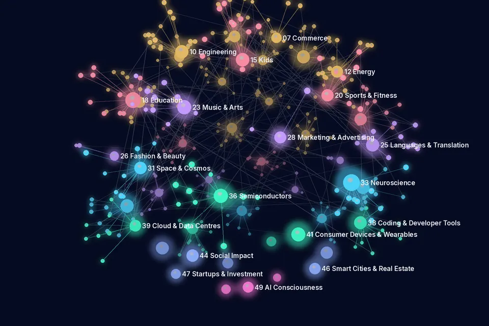

Journal of the AI Universe ✦ Research Papers Today
Research Papers Today
27 November 2026 · 1843 new AI research papers in 49 of the 50 categories · Curated by Dr.P.R.K.Varma
915 peer-reviewed papers and 928 preprints, compiled automatically from arXiv, medRxiv, bioRxiv, PubMed, Crossref, OpenAlex, preprint servers via Crossref (Research Square, Preprints.org, SSRN and others), arxiv_rss, europepmc, s2. Each line gives the title (linked), authors, venue, date, evidence label and identifier. Abstracts and figures are not reproduced: open the paper to read it. A listing is not an endorsement, and preprints have not been peer-reviewed. Health papers are not medical advice.
Research map in 3D
27 November 2026: the top 320 papers in 49 categories as a 3D network. Large points are categories, small points are papers (brighter = peer-reviewed), and faint lines join papers in different categories that share a topic word in their titles. Drag to rotate, pinch or use + and − to zoom, and tap a paper to open the original. Titles and links only.

Papers per category (49 categories)
01–14 Industries & Sectors 585 papers
01 AI Filmmaking
25 papers · 5 peer-reviewed · 20 preprintsProject page →- Distilling Video Diffusion Model to Generate 3D Scenes in One StepWang H, Liu F, Liu Y et al.IEEE Transactions on Pattern Analysis and Machine Intelligence · · Peer-reviewed · DOI 10.1109/tpami.2026.3757675
- Advanced context-aware movie recommender system using deep multi-scale three-dimensional convolutional neural networkJothi Lakshmi S. L, R. Bharathi, Krishna Kumar P et al.Neural computing & applications (Print) · · Peer-reviewed · DOI 10.1007/s00521-026-12520-2
- TurbMamba: A CNN–Mamba Collaborative Framework for Atmospheric Turbulence Video Restoration艾永春, Huan Liu, Guangxi Li et al.Photonics · · Peer-reviewed · DOI 10.3390/photonics13121112 · Open access
- DGST-Net: Depth-Guided Spatiotemporal Transformer for Structure-Aware Video InpaintingZhang Yi, Qixin Liu, Yi Zhang et al.Electronics · · Peer-reviewed · DOI 10.3390/electronics15235514 · Open access
- Long-Video 3D Reconstruction with Geometric Foundation Models: Streaming Inference, Memory Mechanisms, and Global ConsistencyWenhao Shu, 毛诗洋, Jialun Li et al.Sensors · · Peer-reviewed · DOI 10.3390/s26237450 · Open access
- Agentic LongLive: Asynchronous Agentic Memory for Long Video GenerationShaoteng Liu, Shuai Yang, Wei Huang et al.arXiv (cs.CV) · · Preprint · arXiv:2611.34907 · Open access
- StateWeaver: Multi-Agent Coordination of Story-State Transitions for Long-Horizon Video GenerationModi Jin, Xuying Zhang, Yijing Guo et al.arXiv (cs.CV) · · Preprint · arXiv:2611.34290 · Open access
- SPARC: Geometry-Guided Attention Pruning for Long-Horizon Camera-Controlled Video GenerationZesong Yang, Weikai Chen, Liyuan Cui et al.arXiv (cs.CV) · · Preprint · arXiv:2611.34064 · Open access
- DeltaRAE: Derivative Tokenization for Long Video GenerationMingzhuo Yu, Shengcao Cao, Chengzhi Mao et al.arXiv (cs.CV) · · Preprint · arXiv:2611.33886 · Open access
- Neural Rendering Compiler: Generative Video Models as Programmable RenderersYuxia Zhu, Xinglong Xu, Hao Liang et al.arXiv (cs.CV) · · Preprint · arXiv:2611.34680 · Open access
02 AI Agriculture
28 papers · 24 peer-reviewed · 4 preprintsProject page →- Integrating Machine Learning and Manual Observation to Assess Maintenance and Social Behaviors in Free-Stall-Housed Heat-Stressed Lactating Dairy Cows: A Pilot StudyJoshi H, Bethini A, Ardoin A et al.Smart Agricultural Technology · · Peer-reviewed · DOI 10.1016/j.atech.2026.102794 · Open access
- Spatially Adaptive Diffusion Model for High Fidelity Segmentation of Potato Canopies in Complex Farmland ScenariosHe T, Hu B, Huang K et al.Plant Phenomics · · Peer-reviewed · DOI 10.1016/j.plaphe.2026.100303 · Open access
- Automated Identification of Mango Fruit Damage Levels and Health Categories in Thermal Images Through Feature Extraction With a Deep Learning‐Based ApproachSafari Yonasi, Joyce Nakatumba Nabende, Rose Nakasi et al.Applied AI Letters · · Peer-reviewed · DOI 10.1002/ail2.70060 · Open access
- Enhancing Soil Moisture Prediction under Data Scarcity Using Diffusion Models and Transfer LearningHajiabbasi Somehsaraie M, Xie S, Gradiz A et al.Smart Agricultural Technology · · Peer-reviewed · DOI 10.1016/j.atech.2026.102791 · Open access
- RHS-YOLO: A lightweight instance segmentation framework for continuous phenological assessment and visual harvest window determination of edible roses (Rosa spp.)Wang L, Liang Y, Yang Q et al.Smart Agricultural Technology · · Peer-reviewed · DOI 10.1016/j.atech.2026.102785 · Open access
- Integrating intelligent meta-heuristic feature selection with CNN-RNN hybrid deep learning framework for enhanced soil organic carbon prediction in arid ecosystemsLi R, Xia S, Dong J et al.Advances in Space Research · · Peer-reviewed · DOI 10.1016/j.asr.2026.11.076
- Mapping the distribution of soil heavy metal(loid)s in the Taihu Basin based on an integrated spatial machine learning frameworkXue L, Liu L, Shen C et al.Environmental pollution (Barking, Essex : 1987) · · Peer-reviewed · DOI 10.1016/j.envpol.2026.129631 · PMID 43085683
- Multi-temporal machine learning for mapping soil organic carbon dynamics in an arid region of Western IranFathizad H, Kohzadi M, Rahimbegi MEnvironmental monitoring and assessment · · Peer-reviewed · DOI 10.1007/s10661-026-16187-z · PMID 43086474
- A REVIEW OF HYBRID DEEP LEARNING ARCHITECTURES FOR INTELLIGENT SMART AGRICULTURE SYSTEMSAoudumber D. Londhe, Ganesh Shivaji Pise, Vijay Rathod et al.Nigerian Journal of Technology · · Peer-reviewed · DOI 10.67358/njt.2026.5955si · Open access
- Sugarcane Disease Detection Using Deep Learning TechniquesKumar KInternational Journal of Recent Development in Engineering and Technology · · Peer-reviewed · DOI 10.54380/ijrdet1126_37 · Open access
03 AI Defence
8 papers · 3 peer-reviewed · 5 preprintsProject page →- The end of human judgment in the kill chain? Relocating initiative and interpretation with agentic AIDavidovic JAI and Ethics · · Peer-reviewed · DOI 10.1007/s43681-026-01554-w · Open access
- Machine learning-assisted forensic analysis and source attribution of chemical warfare agents in post-exposure environmental scenariosZhang Z, Jin M, Lu X et al.Talanta · · Peer-reviewed · DOI 10.1016/j.talanta.2026.130994 · PMID 43085138
- Di-Net: A Direction-Invariant Transformer Network for Robust Subsurface Target Recognition and Localization Using Ground Penetrating RadarYuwei Chen, Pengyu Zhang, Chaojian Chen et al.Geophysics · · Peer-reviewed · DOI 10.1190/geo-2026-1641
- Unstable Action Boundaries in Lethal Drone AgentsJacques Dumora, André-Louis Rochet, Simon RoburinarXiv (cs.LG) · · Preprint · arXiv:2611.34121 · Open access
- Comparative DGA-Based Fault Diagnosis and Root-Cause Assessment of Transformer using Duval Triangle and Pentagon Graphical MethodThakur V, Ranga CResearch Square · · Preprint · DOI 10.21203/rs.3.rs-10915328/v1 · Open access
- GeoCAM: Self-Supervised Sonar-Optical Representation Learning via Geographic Overlap SupervisionFadi Abdeladhim Zidi, Andrea De Salve, Giuseppe Celeste et al.arXiv (cs.CV) · · Preprint · arXiv:2611.34218 · Open access
- Automated Batch-Variable Selection for ComBat-Based Radiomic HarmonizationJose Lozano-Montoya, Gemma Urbanos, Carmen Prieto-de-la-Lastra et al.arXiv (cs.LG) · · Preprint · arXiv:2611.34618 · Open access
- Strategic and Robust Task Allocation for Combat Objectives in Adversarial Multi-Agent EnvironmentsJonas Peché, Dmitry Matveev, Vladimir Ciric et al.arXiv (cs.MA) · · Preprint · arXiv:2611.34158 · Open access
04 AI Healthcare
274 papers · 203 peer-reviewed · 71 preprintsProject page →Research listing only, not medical advice.
- Development and clinical validation of a multimodal AI framework to predict persistent fever during antibiotic therapy in hospitalized patients with cancerPucher G, Kopp K, Deep A et al.Nature Communications · · Peer-reviewed · DOI 10.1038/s41467-026-79499-1 · Open access
- AI-based digital pathology defines spatial border ecosystems in triple-negative breast cancerZhang H, Yang F, Tian P et al.Science · · Peer-reviewed · DOI 10.1126/science.aei6252
- uniGradICON: A generalizable and transferable foundation model for medical image registrationTian L, Greer H, Demir B et al.Medical Image Analysis · · Peer-reviewed · DOI 10.1016/j.media.2026.104410
- The SAGES Critical View of Safety challenge: A global benchmark for AI-assisted surgical quality assessmentAlapatt D, Eckhoff J, Lyu Z et al.Medical Image Analysis · · Peer-reviewed · DOI 10.1016/j.media.2026.104401
- Towards a Physiologically Rigorous Heartbeat Dynamics Foundation ModelSunil G, Ravi Kumar B, Ramsundar B et al.bioRxiv (Bioengineering) · · Preprint · DOI 10.64898/2026.11.24.768987 · Open access
- Dynamic Reasoning in Next-Gen Detection and Response: An Empirical Study of LLM Triage, Reinforcement Tuning, and Adversarial EvasionJeremy CanalearXiv (cs.AI) · · Preprint · arXiv:2611.33470 · Open access
- From digital pathology to integrated precision oncology: AI-driven biomarker assessment and multimodal data integration in non-small cell lung cancerIlié M, Hofman PMolecular aspects of medicine · · Peer-reviewed · DOI 10.1016/j.mam.2026.101529 · PMID 43085057
- Deep learning-based retinal biomarker for cardiovascular risk capturing the microvascular-macrovascular continuum in type 2 diabetes: a multi-cohort external validation studyPark J, Nusinovici S, Thakur S et al.Diabetologia · · Peer-reviewed · DOI 10.1007/s00125-026-06931-y · PMID 43086393
- Editorial Commentary: Natural Language Processing Is for Patient Empowerment and Physician Communication, Not Clinical ManagementModi IT, Basdavanos AA, Ramkumar PNArthroscopy : the journal of arthroscopic & related surgery : official publication of the Arthroscopy Association of North America and the International Arthroscopy Association · · Peer-reviewed · DOI 10.1002/arj.70899 · PMID 43085414
- Evaluating the feasibility of a nurse-informed, context-driven large language model pipeline for social determinants of health in heart failure careDinh HN, Zhang Z, Bang SH et al.JAMIA open · · Peer-reviewed · DOI 10.1093/jamiaopen/ooag191 · PMID 43095285 · Open access
05 AI Finance
16 papers · 7 peer-reviewed · 9 preprintsProject page →Research listing only, not financial advice.
- The agentic turn in finance: AI agents in financial decision-makingMarc SchmittArtificial Intelligence Review · · Peer-reviewed · DOI 10.1007/s10462-026-11763-8 · Open access
- When trust becomes risk: The dark side of AI-assisted financial decision-makingDarmawan DarmawanSocial Sciences & Humanities Open · · Peer-reviewed · DOI 10.1016/j.ssaho.2026.104092 · Open access
- A Risk-Adaptive Temporal Transaction Intelligence Framework for Credit Card Fraud Detection and Explainable Financial Risk AssessmentKoduri Sambasivarao K. Subba ReddyInternational Journal of Engineering Research and Science & Technology · · Peer-reviewed · OpenAlex W7239921212 · Open access
- EFICACIA DE LA IA AGÉNTICA EN LA DETECCIÓN DE FRAUDE Y ANOMALÍAS FINANCIERAS: EVIDENCIA DE UNA REVISIÓN SISTEMÁTICARobert M. Sanchez, Viviana Lizbeth Rivera Rumiche, Jessica Karina Torres Cáceres et al.Aula Virtual. · · Peer-reviewed · DOI 10.5281/zenodo.24531841 · Open access
- Determinants of Artificial Intelligence Adoption Intention in Banking: An Extended TOE Framework PerspectiveSangita Basak, Rosli Mahmood, Nur Shazwani Rosli et al.International Journal of Business and Management · · Peer-reviewed · DOI 10.5539/ijbm.v21n6p231 · Open access
- TÉCNICAS E ALGORITMOS DE INTELIGÊNCIA ARTIFICIAL APLICADOS AOMERCADO FINANCEIRO: UMA REVISÃO SISTEMÁTICA DA LITERATURAPEDRO EUGENIO RAMOS, MILENA DE OLIVEIRA ARANTES, TÁBATA NAKAGOMI FERNANDES PEREIRARevista Científica e-Locução · · Peer-reviewed · DOI 10.57209/vtf8aa62 · Open access
- AI-Assisted Scenario Planning for Strategic Decision-Making Under Economic and Technological UncertaintyAlp Bora CokerNext generation. · · Peer-reviewed · DOI 10.62802/ngjyr.196
- Self-supervised Clipped-objective Reinforcement Leaning Framework for Risk-aware Portfolio ManagementZongshen MuarXiv (cs.LG) · · Preprint · arXiv:2611.33652 · Open access
- Agentic AI in Payments and Financial Transactions: A Survey of Architectures, Safeguards and Open ProblemsAji SC, Palade VPreprints.org · · Preprint · DOI 10.20944/preprints202611.2539.v1 · Open access
- How LLM Agents Reshape Financial Knowledge Graphs: A SurveyYunbai Zhang, Heze Ma, Nan Jiang et al.arXiv (q-fin.GN) · · Preprint · arXiv:2611.33584 · Open access
06 AI Law & Investigation
9 papers · 8 peer-reviewed · 1 preprintProject page →Research listing only, not legal advice.
- AI agents in the boardroom: legal permissibility, agency conflicts, and corporate law suitabilityMertens FComputer Law & Security Review · · Peer-reviewed · DOI 10.1016/j.clsr.2026.106434
- Inteligencia artificial en la administración de justicia y garantías del debido proceso en América Latina: una revisión narrativaRaúl Patricio Belalcázar Garzón, Patricio BelalcázarVisión Académica · · Peer-reviewed · DOI 10.70577/mgrc3e19 · Open access
- AI-DRIVEN DIGITAL CRIME PATTERN ANALYSISNeha Sarashetti, Manjula Bhajantri, Pooja Hullannavar et al.IJARCCE · · Peer-reviewed · DOI 10.17148/ijarcce.2026.1511198 · Open access
- Artificial Intelligence in Legal Proceedings: Constitutional LimitsT. Arkhireyskaya, M. IvanovaJURIST · · Peer-reviewed · DOI 10.18572/1812-3929-2026-11-41-47
- The Reliability of a Small Local Large Language Model Judge for Comparing Graph-Augmented and Vector Retrieval: A Cautionary Case StudyAkram T. Zeyad, Fanan Hikmat Jasim, Mohammed Abdulsalam AbboodMesopotamian Journal of Computer Science · · Peer-reviewed · DOI 10.68212/2958-6631.1078 · Open access
- Low-dimensional approximations of the conditional law of discrete-time Volterra processes: A non-positive curvature approachLuca Galimberti, Anastasis Kratsios, Giulia Livieri et al.Analysis and Applications · · Peer-reviewed · DOI 10.1142/s0219530526300012 · Open access
- Computable due process: the guarantee of a reasoned decision as a specification of admissible legal reasoning in assisted judicial actionCruz-Núnez RL, Aguilar-Brito HA, Aguirre-Lanegra AJ et al.Frontiers in artificial intelligence · · Peer-reviewed · DOI 10.3389/frai.2026.1957004 · PMID 43094735 · Open access
- Modeling legal ontologies with a validation based LLM pipelineGalileo Sartor, Enrico Francesconi, Adam WynerFrontiers in Artificial Intelligence · · Peer-reviewed · DOI 10.3389/frai.2026.1931148 · Open access
- From Data Room to Report: End-to-End AI Support for M&A Legal Due DiligenceJohannes R. Hübers, Daniel Uedelhoven, Manuela Bergau et al.arXiv (cs.CL) · · Preprint · arXiv:2611.34120 · Open access
07 AI Commerce
5 papers · 2 peer-reviewed · 3 preprintsProject page →- From Customer Voice to Predictive Intelligence: Machine Learning Analysis of E-Commerce ReviewsOthman A. Alrusaini, Hasan BeyariElectronics · · Peer-reviewed · DOI 10.3390/electronics15235505 · Open access
- Cross-channel temporal fusion for retail customer lifetime value prediction: architecture, ablation, and causal validation of a gated BiGRU fusion networkFaysal SM, Sultana S, Haldar U et al.Frontiers in artificial intelligence · · Peer-reviewed · DOI 10.3389/frai.2026.1956496 · PMID 43094920 · Open access
- The Influence of Artificial Intelligence Chatbots on Customer Experience, Satisfaction and Brand Loyalty in E-CommercePanchal R, Shah APreprints.org · · Preprint · DOI 10.20944/preprints202611.2564.v1 · Open access
- Governing agentic AI in marketing: Bounded delegated agency and consumer decision authority in shopping servicesXi JResearch Square · · Preprint · DOI 10.21203/rs.3.rs-11786698/v1 · Open access
- Learning from Unreliable Operator References: Claim-Level Rewards for Customer Support AgentsDmitrii Stoianov, Olga Tsymboi, Danil Taranets et al.arXiv (cs.CL) · · Preprint · arXiv:2611.34341 · Open access
08 AI Journalism
5 papers · 3 peer-reviewed · 2 preprintsProject page →- Dual-pipeline fake news detection via cross-attention fusion and meta-ensemble classificationAgnibesh Dutta, Utkrisht Sneh, S. M. PrabinScientific Reports · · Peer-reviewed · DOI 10.1038/s41598-026-81289-0 · Open access
- An explainable graph neural network and BERT-based framework for fake news detection using LIME and SHAPMouli Gupta, Tamilarasi Kathirvel Murugan, Logeswari Govindaraj et al.Scientific Reports · · Peer-reviewed · DOI 10.1038/s41598-026-79198-3 · Open access
- Layer wise IndoBERT representation evolution for Indonesian misinformation detectionRini Anggrainingsih, Julian Dewanto, Ghulam Mubashar HassanDiscover Artificial Intelligence · · Peer-reviewed · DOI 10.1007/s44163-026-02757-0 · Open access
- FrIdéo: French News Outlet Ideology Scoring via Multi-Source Evidence Fusion and Distancing-Aware Lexical ScoringAmr SobhyarXiv (cs.CL) · · Preprint · arXiv:2611.33266 · Open access
- When Peer Review Does Not Reach Closure: Generative AI, Critique Inflation, and the Editorial Stopping ProblemVrabel RPreprints.org · · Preprint · DOI 10.20944/preprints202611.2569.v1 · Open access
09 AI Architecture
4 papers · 3 peer-reviewed · 1 preprintProject page →- Can AI help us navigate architectural design research? Classifying academic literature using machine learningYuval Kahlon, C. McComb, Haruyuki FujiiArtificial intelligence for engineering design, analysis and manufacturing · · Peer-reviewed · DOI 10.1017/s089006042610033x
- An artificial intelligence-based framework for conceptual cost estimation in construction projectsCansu Coşkun, Deniz BesiktepeJournal of Information Technology in Construction · · Peer-reviewed · DOI 10.36680/j.itcon.2026.061 · Open access
- Large Language Models as Systems Architects: A Controlled Study of Consensus, Fabrication, and Constraint Reasoning on One Hard Design TaskRoshan AryalCureus Journal of Computer Science. · · Peer-reviewed · DOI 10.7759/s44389-026-00392-5 · Open access
- Online Identification Can Replace a Floor-Plan Prior on Unseen BuildingsElias T. -H. Shieh, Chun FuarXiv (eess.SY) · · Preprint · arXiv:2611.33656 · Open access
10 AI Engineering
26 papers · 17 peer-reviewed · 9 preprintsProject page →- Accelerating inverse materials design using generative diffusion models with reinforcement learningChen J, Guo J, Fako E et al.Nature Machine Intelligence · · Peer-reviewed · DOI 10.1038/s42256-026-01334-5 · Open access
- Artificial intelligence and computational modeling for electrochemical oxidation reactor design: A review of computational fluid dynamics, multiphysics simulation, reaction kinetics, and digital twin technologiesKhoramipoor Z, Miralimortezayirote Z, Nabizadeh Chianeh F et al.Engineering Applications of Artificial Intelligence · · Peer-reviewed · DOI 10.1016/j.engappai.2026.116859
- Explainable machine learning-based surrogate models for buckling analysis of nonlocal modified couple stress nanobeamsA. Tariq, Uğur Kafkas, B. Uzun et al.Journal of the Brazilian Society of Mechanical Sciences and Engineering · · Peer-reviewed · DOI 10.1007/s40430-026-07069-z
- A Physics Informed Neural Network framework for solving time fractional Navier–Stokes equationsJyoti Shekhawat, Alok Bhargava, Tanu JainDiscover Applied Sciences · · Peer-reviewed · DOI 10.1007/s42452-026-09495-z · Open access
- RETO: a rotary-enhanced Transformer operator for high-fidelity prediction of automotive aerodynamicsBojun Zhang, Huiyu Yang, Yunpeng Wang et al.Acta Mechanica Sinica · · Peer-reviewed · DOI 10.1007/s10409-026-60567-x · Open access
- Microscopic Inclusion Detection in Aluminum Alloy Materials Using an Adaptive Dynamic Feature Weighted Fusion Network Based on Transformer and U-NetTianlong Wang, Ying Li, Yushi Ding et al.Metallurgical and Materials Transactions B · · Peer-reviewed · DOI 10.1007/s11663-026-04366-9
- Deep learning-driven digital twin for multi-source temperature field prediction across the entire sequenceXue-Feng Wu, Xu-Lu JiangJournal of the Brazilian Society of Mechanical Sciences and Engineering · · Peer-reviewed · DOI 10.1007/s40430-026-07091-1
- Enhancing Deep Learning-Driven Domain Decomposition (DLD3) generalizability using Non-Uniform Fourier Neural OperatorsMehran Shirazi, Balavignesh Vemparala, Soheil SoghratiComputer Methods in Applied Mechanics and Engineering · · Peer-reviewed · DOI 10.1016/j.cma.2026.119613 · Open access
- Physics-Informed Learning for Multiplayer Differential GamesTakuma A. Adams, A. Cullen, Tansu AlpcanIEEE Control Systems Letters · · Peer-reviewed · DOI 10.1109/lcsys.2026.3700693 · arXiv:2611.33644 · Open access
- Physics-informed neural networks with reinforcement-learning-based adaptive sampling for the variable-coefficient (3+1)-dimensional BLMP equationFenghua Qi, Zhenbin Qi, Xiaoyue ZhangEngineering Analysis with Boundary Elements · · Peer-reviewed · DOI 10.1016/j.enganabound.2026.107190
11 AI Robotics
120 papers · 13 peer-reviewed · 107 preprintsProject page →- Exploiting transformer-driven optimal deep learning approach for dual-task data analytics framework for unmanned aerial vehicles remote sensing dataMohamed Medani, Nada Alzaben, N. Alruwais et al.Scientific Reports · · Peer-reviewed · DOI 10.1038/s41598-026-73355-4
- Potato yield estimation from UAV multispectral imagery using physics-guided deep learning and dynamic biomass modelingLi C, He Y, Si J et al.Plant Phenomics · · Peer-reviewed · DOI 10.1016/j.plaphe.2026.100307 · Open access
- Cotton seedling counting in different observation windows based on UAV RGB imagery combined with deep learningChen M, Wang K, Su N et al.Computers and Electronics in Agriculture · · Peer-reviewed · DOI 10.1016/j.compag.2026.112659
- Modulation recognition based on hybrid mechanism prototype network in UAV swarm communicationShuai Wang, Jiaqi ZhenJournal on Wireless Communications and Networking · · Peer-reviewed · DOI 10.1186/s13638-026-02713-7 · Open access
- Optimizing neural networks to solve kinematic problems of parallel manipulatorsCristopher Rodríguez Afonso, Alfonso Hernández, Oscar Altuzarra et al.Acta Mechanica Sinica · · Peer-reviewed · DOI 10.1007/s10409-026-51124-x
- Semantic retrieval for mission-aware UAV coordination: a large language model approachAnıl SezginNeural Computing and Applications · · Peer-reviewed · DOI 10.1007/s00521-026-12642-7
- Shared control/autonomy in human-robot interaction: Current trends and the role of generative AIHagenow M, Selvaggio M, Yu X et al.The International Journal of Robotics Research · · Peer-reviewed · DOI 10.1177/02783649261506650
- The present-future of border drones: Beyond techno-utopic and techno-dystopic visions of the artificial intelligenceTopak ÖEBig Data & Society · · Peer-reviewed · DOI 10.1177/20539517261500658 · Open access
- Control of a ball balancing robot using a standalone reinforcement learning agentAbdelrahman Nashat, Mustafa Abdelrahman, Mohamed Hassan et al.Robotic Intelligence and Automation · · Peer-reviewed · DOI 10.1108/ria-09-2025-0303
- Chaos Detection Using Artificial Neural Network-Based Copula Entropy Representations for a 6-DOF Mobile RobotYousuf LSEntropy (Basel, Switzerland) · · Peer-reviewed · DOI 10.3390/e28111236 · PMID 43088636 · Open access
12 AI Energy
17 papers · 10 peer-reviewed · 7 preprintsProject page →- Explainable deep reinforcement learning for hybrid renewable energy management: A Shapley value analysis of decision makingSakthivel S, Prabakaran B, Charulatha G et al.Engineering Applications of Artificial Intelligence · · Peer-reviewed · DOI 10.1016/j.engappai.2026.116861
- Scalable Heterogeneous Graph Foundation-Model Workflows for Data-Driven Optimal Power FlowPasini ML, Li Y, Kim K et al.IEEE Transactions on Smart Grid · · Peer-reviewed · DOI 10.1109/tsg.2026.3757077
- Physically Grounded Descriptors for Machine-Learning-Guided Diluent Design in Lithium Metal BatteriesKim M, Nam C, Lee H et al.Journal of the American Chemical Society · · Peer-reviewed · DOI 10.1021/jacs.6c16379 · PMID 43089486
- Data Infrastructure and Inverse Design in Metal-Organic Framework‑Based Energy Storage MaterialsHuang Q, Yuan G, Jiang S et al.Chemical record (New York, N.Y.) · · Peer-reviewed · DOI 10.1002/tcr.70279 · PMID 43094239
- Sustainable locally sourced drilling fluids integrated with machine learning for performance optimization in petroleum well constructionPromise Gabriel Pepple, A. SangoremiDiscover Chemistry · · Peer-reviewed · DOI 10.1007/s44371-026-01098-2
- Rapid Preliminary Screening of Herring Oil Adulteration Based on Temperature-Corrected Refractive Index Modeling and Machine LearningMing-Yu Dong, Wei-Fang Bao, Zhi-Hao Yang et al.Food Analytical Methods · · Peer-reviewed · DOI 10.1007/s12161-026-03390-4
- A deep learning-driven emission estimator utilizing a mixture of experts for local wind speed situations applied to high-resolution methane imageryThomas Plewa, André Butz, Christian Frankenberg et al.Atmospheric measurement techniques · · Peer-reviewed · DOI 10.5194/amt-19-7815-2026 · Open access
- A Hybrid Convolutional and Polynomial Attention Transformer Framework for Solar Panel Defect ClassificationTupakula Swetha, G. Uday Kiran bhargavInternational Journal of Engineering Research and Science & Technology · · Peer-reviewed · DOI 10.62643/ijerst.2026.v22.n4.4905 · Open access
- EPSO: Short-Term Wind Power Prediction Based on Improved Particle Swarm Optimization BP Neural Network ModelLele Cui, Gang Yi HuBiomimetics · · Peer-reviewed · DOI 10.3390/biomimetics11120857 · Open access
- Runtime Mission Revision for AUV Inspection of Offshore Photovoltaic Support Piles Using Contract-Gated LLM ProposalsXinjie Zhao, Jun Liao, Yaxing Wang et al.Journal of Marine Science and Engineering · · Peer-reviewed · DOI 10.3390/jmse14232253 · Open access
13 AI Transportation
29 papers · 13 peer-reviewed · 16 preprintsProject page →- Digital attack to deceive depth estimation models in autonomous vehicle systems using imperceptible adversarial perturbationHomayoun Rastegar, Hassan Khotanlou, Amir SalarpourScientific Reports · · Peer-reviewed · DOI 10.1038/s41598-026-82216-z · Open access
- Probabilistic reliability and profitability modeling of multi-state autonomous vehicles using a robust backpropagation neural network frameworkCharu Bajaj, Surbhi Gupta, Gaurav Varshney et al.Discover Artificial Intelligence · · Peer-reviewed · DOI 10.1007/s44163-026-02684-0
- Coordinated control of pitch and vertical vibration in multibody active suspension systems of electric vehicles using deep reinforcement learningZhiwu Chen, Mingyang Sun, Ling Ma et al.Mechanism and Machine Theory · · Peer-reviewed · DOI 10.1016/j.mechmachtheory.2026.106696 · Open access
- Machine learning-based detection of trace-level radioactive materials in soil using unmanned vehiclesYao SN, Wang YHApplied radiation and isotopes : including data, instrumentation and methods for use in agriculture, industry and medicine · · Peer-reviewed · DOI 10.1016/j.apradiso.2026.113135 · PMID 43085266
- A multi-modal dynamic graph neural network for road traffic predictionSamaneh Keshavarzi, Peyman Adibi, Fakhroddin Noorbehbahani et al.Computing · · Peer-reviewed · DOI 10.1007/s00607-026-01766-2
- Stochastic Neural Network-Based Modeling of Pedestrian Crossing Behavior at Unsignalized CrosswalksDabčević Z, Škugor B, Deur J et al.IEEE Transactions on Intelligent Transportation Systems · · Peer-reviewed · DOI 10.1109/tits.2026.3751515 · Open access
- Artificial intelligence for maritime security comparing convolutional neural network and vision transformer architectures under model specific preprocessingİsmet Göçer, Zakirul Bhuiyan, Shakeel Ahmad et al.Discover Informatics · · Peer-reviewed · DOI 10.1007/s44564-026-00047-6 · Open access
- Secure and Distributed Automotive Logistics Systems Integrating Federated Learning and Blockchain for Cognitive Vehicle NetworksVetrivel Palpandi, Raja Guru Ramaraj, Prabhu RadhakrishnanActa Technica Jaurinensis · · Peer-reviewed · DOI 10.14513/actatechjaur.00993 · Open access
- Quantized Distillation for Edge-Based Traffic Data Compression in Green Logistics: A Digital Last-Mile Solution for Vietnam’s Urban CentersNguyen The HuanEuropean Journal of Theoretical and Applied Sciences · · Peer-reviewed · DOI 10.59324/ejtas.2026.4(6).23 · Open access
- Park-Alert: AI-Assisted Parking Management SystemS. V. Saboji, H. A. Deepthi, Apeksha M. Patted et al.IJARCCE · · Peer-reviewed · DOI 10.17148/ijarcce.2026.1511215 · Open access
14 AI Manufacturing
19 papers · 11 peer-reviewed · 8 preprintsProject page →- Industrial patch-level geometric defect detection for wire arc additive manufacturing of aircraft landing gear components using a memory-augmented residual autoencoderLi R, Ma H, Su J et al.Journal of Manufacturing Systems · · Peer-reviewed · DOI 10.1016/j.jmsy.2026.11.005
- Physics-guided boosting machine learning for bead geometry prediction in wire arc additive manufacturing under natural and forced coolingSaravanamuthukumar Ponraj, Ahmad Baharuddin Abdullah, Z. K. WaniJournal of the Brazilian Society of Mechanical Sciences and Engineering · · Peer-reviewed · DOI 10.1007/s40430-026-07135-6
- Design-to-Plan: A large language model-based multi-agent framework for manufacturing process planning from 3D CAD models and 2D engineering drawingsKhan MT, Chen L, Feng W et al.Journal of Manufacturing Systems · · Peer-reviewed · DOI 10.1016/j.jmsy.2026.11.004
- Iterative deep learning architectures for situational awareness and adaptive control in human–robot collaborationLaura Romeo, Cosimo Patruno, Grazia Cicirelli et al.International Journal of Dynamics and Control · · Peer-reviewed · DOI 10.1007/s40435-026-02407-4 · Open access
- Enhancing weld defect detection in low-resolution environments via selective aggregation transformer super-resolutionSeyed Hamid SafaviScientific Reports · · Peer-reviewed · DOI 10.1038/s41598-026-82193-3 · Open access
- Deep Learning-Driven Edge Intelligence: A Comprehensive Survey of Architectures, Optimization Techniques, and Industrial ApplicationsJasmine Yadav, Neeta Bhusal Sharma, Yusuf PerwejInternational Journal of Scientific Research in Computer Science Engineering and Information Technology · · Peer-reviewed · DOI 10.32628/cseit2612627 · Open access
- Longitudinal Prediction of WAAM Bead Geometry from 3D Point-Cloud Linear Measurements Using Machine LearningŠket K, Ficko M, Karner T et al.Materials (Basel, Switzerland) · · Peer-reviewed · DOI 10.3390/ma19224809 · PMID 43091210 · Open access
- Applications of Machine Learning in Traditional Chinese Medicine Quality Control: Methods, Progress, and ChallengesWu JZ, Li P, Qi ZM et al.Pharmaceuticals (Basel, Switzerland) · · Peer-reviewed · DOI 10.3390/ph19111751 · PMID 43093335 · Open access
- The Indirect Bonding Trays (IBT) in Contemporary Orthodontics: A Narrative Review on Use, Accuracy, and Future PerspectivesSluzalec-Wieckiewicz K, Wezgowiec J, Kijak E et al.Polymers · · Peer-reviewed · DOI 10.3390/polym18222916 · PMID 43093241 · Open access
- Laser-Induced Breakdown Spectroscopy (LIBS) for the Analysis of Commercial Milk SamplesNanou E, Pliatsika N, Couris SMolecules (Basel, Switzerland) · · Peer-reviewed · DOI 10.3390/molecules31224226 · PMID 43093622 · Open access
15–20 People & Life Stages 147 papers
15 AI Kids
14 papers · 11 peer-reviewed · 3 preprintsProject page →- Explainable regression via an imbalance-aware multi-objective evolutionary fuzzy system: An application to childhood obesity studying accelerometry and genetic dataM Arteaga, Mireia Bustos‐Aibar, Álvaro Torres‐Martos et al.Engineering Applications of Artificial Intelligence · · Peer-reviewed · DOI 10.1016/j.engappai.2026.116730 · Open access
- Accurate gestational age estimation with a deep learning model using ultrasound images to enhance detection of fetal growth restriction and small-for-gestational-age fetuses in late pregnancy: a prospective cohort studyMishra D, Chanian R, Jain R et al.eClinicalMedicine · · Peer-reviewed · DOI 10.1016/j.eclinm.2026.104354 · Open access
- Generative artificial intelligence in pediatric gastrointestinal documentation: Practical applications, limitations, and implementation frameworkWatson KL, Lee JA, Woodruff SA et al.Journal of pediatric gastroenterology and nutrition · · Peer-reviewed · DOI 10.1002/jpn3.70649 · PMID 43095867
- AI-Faces by Illinois: A database of AI-generated faces depicting childrenChao TW, Mei J, Shang IT et al.Behavior research methods · · Peer-reviewed · DOI 10.3758/s13428-026-03182-y · PMID 43086521 · Open access
- Integrating Artificial Intelligence (AI) Chatbots to Promote Health Behaviors in AdolescentsTan Q, Chen SChildren (Basel, Switzerland) · · Peer-reviewed · DOI 10.3390/children13111495 · PMID 43089628 · Open access
- Predicting Pediatric Appendicitis: A Comparative Explainable Machine Learning Analysis of Routine Laboratory ParametersSridharan K, Sivaramakrishnan GMedical sciences (Basel, Switzerland) · · Peer-reviewed · DOI 10.3390/medsci14070798 · PMID 43091436 · Open access
- Do Severity Prediction Models for Paediatric Appendicitis Work in Another Hospital? A Bidirectional External Validation and Local Recalibration StudyYasar S, Yagin FH, Alzakari SA et al.Diagnostics (Basel, Switzerland) · · Peer-reviewed · DOI 10.3390/diagnostics16223827 · PMID 43088907 · Open access
- Machine-Learning Prediction of Pediatric Thyroid Nodule Malignancy Using Structured Nodule and Cervical Lymph-Node Ultrasonographic FeaturesDing J, Zhang X, Chang Y et al.Diagnostics (Basel, Switzerland) · · Peer-reviewed · DOI 10.3390/diagnostics16223773 · PMID 43088854 · Open access
- Geometry- and dynamics-based generation and imputation of neonatal pose sequences: linear, angular, inertia-based, and LSTM modelsSyed Taimoor Hussain Shah, Syed Adil Hussain Shah, Janet Pigueiras-del-Real et al.Frontiers in Big Data · · Peer-reviewed · DOI 10.3389/fdata.2026.1872138 · Open access
- Artificial Intelligence-Based Lower-Limb Alignment Measurement in Pediatric and Adult Patients: Clinical Validation of Automated and Physician-Supervised WorkflowsGünbatar O, Atasoy İT, Şen C et al.Children (Basel, Switzerland) · · Peer-reviewed · DOI 10.3390/children13111601 · PMID 43089733 · Open access
16 AI Geriatric
14 papers · 14 peer-reviewedProject page →- Deep learning benchmarking for wearable sensor fall detection and multiclass activity recognitionWalaa M. Abd-Elhafiez, Maher Alrahhal, S. Andrew Gadsden et al.Discover Artificial Intelligence · · Peer-reviewed · DOI 10.1007/s44163-026-02804-w · Open access
- Correction: An explainable machine learning-based prediction model for sarcopenia in elderly Chinese people with knee osteoarthritisZiteng Wang, Yu-Qin Zhou, Xing Zeng et al.Aging Clinical and Experimental Research · · Peer-reviewed · DOI 10.1007/s40520-026-03485-2
- Ai-Driven Fall Detection Framework for Assisted Living EnvironmentsYadavalli Koteswara Rao M. Lakshmana RaoInternational Journal of Engineering Research and Science & Technology · · Peer-reviewed · OpenAlex W7239983491 · Open access
- Machine Learning and Mediation Analysis Reveal Multiple Pathways of Severe Pain in Middle-Aged and Elderly People: Predictive Models and Mechanism Evidence From the CHARLS DatabaseCheng S, Ding Y, Hong H et al.Pain research & management · · Peer-reviewed · DOI 10.1155/prm/3759795 · PMID 43094242
- Associations Between Sarcopenia/Muscular Atrophy and Cardiovascular Diseases: Science Mapping and Research AnalysisAldhahi MI, Abdelwahab SIBritish journal of hospital medicine (London, England : 2005) · · Peer-reviewed · DOI 10.31083/bjhm62015 · PMID 43096082
- AI-Mediated Care-Washing: Discourse, Cognition, and Dual-Layer Decoupling in China’s Elderly Companion Product SectorXu Jia, Noor Fareen Abdul RahimInternational Journal of Academic Research in Business and Social Sciences · · Peer-reviewed · DOI 10.6007/ijarbss/v16-i11/29421 · Open access
- Development of a machine learning-based prediction model for frailty in patients with breast cancer during chemotherapyWu Y, Gao Y, Huang WMedicine international · · Peer-reviewed · DOI 10.3892/mi.2026.349 · PMID 43095464 · Open access
- An IoT-Based Healthcare Monitoring and Surveillance Framework for People with Special NeedsAssiri MBioengineering (Basel, Switzerland) · · Peer-reviewed · DOI 10.3390/bioengineering13111289 · PMID 43088014 · Open access
- MedBackdoorGuard: Detecting and Mitigating Backdoor Attacks in Deep Learning Models for MRI-Based Alzheimer's Disease and Mild Cognitive Impairment DiagnosisPasha SMM, Sohag SR, Ghanem HBrain sciences · · Peer-reviewed · DOI 10.3390/brainsci16111191 · PMID 43088307 · Open access
- An Interpretable Multimodal Wearable Sensing Framework for Caregiving Activity Recognition in Home-Based Elderly CareZhonghua Liu, Tao Liu, Yicong LiuBioengineering · · Peer-reviewed · DOI 10.3390/bioengineering13121435 · Open access
17 AI Psychology
38 papers · 32 peer-reviewed · 6 preprintsProject page →Research listing only, not medical advice.
- LLM-augmented therapy normalization and aspect-based sentiment analysis of treatment-resistant depression-labeled Reddit discourseYuxin Zhu, Sahithi Lakamana, Masoud Rouhizadeh et al.npj Mental Health Research · · Peer-reviewed · DOI 10.1038/s44184-026-00259-6 · Open access
- Explainable machine learning for early identification of mental health risk in university studentsRudi SetiawanDiscover Artificial Intelligence · · Peer-reviewed · DOI 10.1007/s44163-026-02850-4
- An examination of the impacts of ChatGPT-informed language instruction on EFL learners’ willingness to communicate, anxiety, autonomy, and self-regulated language learningRoghayeh Barri Bourachalou, Aram Pouyan, Farnoush AhangaranDiscover Education · · Peer-reviewed · DOI 10.1007/s44217-026-02481-y
- Beyond empathy: the narrative limitations of LLM therapyŞerife Tekin, Liz BowenSynthese · · Peer-reviewed · DOI 10.1007/s11229-026-05878-2
- Re-Imagining Dialysis Empathy Through AI (Artificial Intelligence)-Empowered Narrative PracticeChiu YL, Chao CTHemodialysis international. International Symposium on Home Hemodialysis · · Peer-reviewed · DOI 10.1111/hdi.70137 · PMID 43094276
- Generative AI Chatbot Responses to Suicide and Self-Harm: Systematic ReviewKelly DA, Franz PJ, Guttman A et al.Journal of medical Internet research · · Peer-reviewed · DOI 10.2196/103517 · PMID 43097719
- Data-Driven Methods Supporting Mental Health and Well-Being Service Delivery: Umbrella ReviewAhmad S, Bond R, Tariq Z et al.Journal of medical Internet research · · Peer-reviewed · DOI 10.2196/106104 · PMID 43097446
- Identifying youth at risk for suicidal ideation using machine learning: Integrating clinical utility and model interpretabilitySim K, Bae SMDigital health · · Peer-reviewed · DOI 10.1177/20552076261510548 · PMID 43094886 · Open access
- Nationwide Self Harm Behavioral Analytics Using Deep Contextual Language RepresentationsSingh Amit Kumar, Thanishk T, Shiva M et al.Indian Journal of Computer Science and Technology · · Peer-reviewed · DOI 10.59256/indjcst.20260503119
- Machine Learning-Based Analysis of Basic Emotions: Comparing Emotion Categories and AlgorithmsAmara Jyothi Dr. A, Vishnu Vardhan D, Deepthi P et al.International Journal of Innovative Research in Engineering · · Peer-reviewed · DOI 10.59256/ijire.20260706017
18 AI Education
57 papers · 51 peer-reviewed · 6 preprintsProject page →- Large language model-mediated educational interventions in medical education: A scoping review and interpretive conceptual synthesisMateus Sánchez JE, Castellanos Domínguez YZ, Solarte David VAMedical teacher · · Peer-reviewed · DOI 10.1080/0142159x.2026.2756413 · PMID 43096799
- Innovation of smart classroom teaching methods for college physical education supported by deep learning and the Internet of ThingsZhongliang LiuDiscover Artificial Intelligence · · Peer-reviewed · DOI 10.1007/s44163-026-02119-w · Open access
- A narrative review of academic integrity and curriculum integration of artificial intelligence in higher educationTracy M. PeñaDiscover Education · · Peer-reviewed · DOI 10.1007/s44217-026-02424-7
- Pre-service teachers’ pedagogical decision-making with Generative AI in lesson planningSun-Yee Yip, J. Ji, L. Pretorius et al.The Australian Educational Researcher · · Peer-reviewed · DOI 10.1007/s13384-026-01039-z
- Understanding secondary school students’ attitudes toward artificial intelligence in educationSnježana Dobrota, Josipa JurićDiscover Education · · Peer-reviewed · DOI 10.1007/s44217-026-02457-y
- Ban, restrict, or allow? An analytic hierarchy process approach to evaluating generative AI risk governance in higher educationNguyen Binh Phuong DuyEducation and Information Technologies · · Peer-reviewed · DOI 10.1007/s10639-026-14182-y
- Validating an artificial intelligence literacy scale and contrasting declared and spontaneous ethics in Chilean university studentsRicardo Monge-Rogel, Sebastián Pérez-Aguilera, Loreto Sáez-ValdésDiscover Artificial Intelligence · · Peer-reviewed · DOI 10.1007/s44163-026-02838-0 · Open access
- Using Generative AI to Promote Mathematical Reasoning in ClassroomsTiffany J. LaCroix, J. Lannin, S. OttenDigital Experiences in Mathematics Education · · Peer-reviewed · DOI 10.1007/s40751-026-00206-2
- Global survey of undergraduate and postgraduate university AI education and AI curriculum proposalDimitria Ioanna Briza, Alexandros Zamioudis, Ioannis Mademlis et al.Discover Education · · Peer-reviewed · DOI 10.1007/s44217-026-02454-1
- Designing Scalable and Adaptive AI Feedback: Student Perceptions of AI and Hybrid Human–AI Feedback Across Performance LevelsYap YK, Liu EComputers and Education: Artificial Intelligence · · Peer-reviewed · DOI 10.1016/j.caeai.2026.100698 · Open access
19 AI Work & Employment
17 papers · 14 peer-reviewed · 3 preprintsProject page →- Predicting multiple respiratory symptoms in occupational settings using multi-output machine learning approachesRouhollah Parvari, Haniyeh Soltanpour, Behnam Khodarahmi et al.Scientific Reports · · Peer-reviewed · DOI 10.1038/s41598-026-81655-y · Open access
- Socio-economic indicators of occupational accidents: a hybrid deep learning forecasting study in an emerging economyBegüm Erol, Kübra Sezen ErküvünJournal of Computational Social Science · · Peer-reviewed · DOI 10.1007/s42001-026-00511-1
- AI Adoption in Talent Recruitment: Assessing Key Factors and Impact Through the Technology Acceptance Model (TAM)W. RajapaksheJournal of the Knowledge Economy · · Peer-reviewed · DOI 10.1007/s13132-026-03579-2
- AI service quality in the workplace: conceptualization, scale development and validationPeng-Yi Shen, Ru-Meng Zhang, De-Min WanJournal of Services Marketing · · Peer-reviewed · DOI 10.1108/jsm-02-2026-0171
- AI-Based Employee Monitoring SystemPradeep Gowda, Ushashree B N, Chirag M et al.International Journal of Science Strategic Management and Technology · · Peer-reviewed · DOI 10.55041/ijsmt.v2i11.039 · Open access
- An Integrated Explainable HR Analytics Framework for employee attrition prediction: combining theory-guided feature engineering, explainable AI, and evidence-based decision supportM. Sangeetha, K. VijayarajFrontiers in Artificial Intelligence · · Peer-reviewed · DOI 10.3389/frai.2026.1979346 · Open access
- Generative Artificial Intelligence Use Related to Worker Wellbeing: An Exploration of GenAI Use Frequency, GenAI Use Functions, and Burnout Dimensions Across WorkersCoker MC, Shin I, Riforgiate SE et al.Behavioral sciences (Basel, Switzerland) · · Peer-reviewed · DOI 10.3390/bs16112180 · PMID 43087478 · Open access
- Artificial intelligence diffusion, adaptive Human-Capital Transformation, and unequal development: evidence from a 50-country panelPessoa G, Tolstikova S, Kaldibayev N et al.Frontiers in artificial intelligence · · Peer-reviewed · DOI 10.3389/frai.2026.1901423 · PMID 43094666 · Open access
- Reconstructing Core Competencies of Front-Office Employees in South Korean Professional Sports Organizations in the Era of Artificial Intelligence: A Delphi StudyKim D, Jeong YBehavioral sciences (Basel, Switzerland) · · Peer-reviewed · DOI 10.3390/bs16112050 · PMID 43087348 · Open access
- When AI Becomes a "Colleague": How Anthropomorphism and Cognitive Support Shape the Demand-Cyberloafing Link in Human-AI CollaborationZhang L, Chen S, Ma X et al.Behavioral sciences (Basel, Switzerland) · · Peer-reviewed · DOI 10.3390/bs16112174 · PMID 43087472 · Open access
20 AI Sports & Fitness
7 papers · 6 peer-reviewed · 1 preprintProject page →- A transformer-based multimodal fusion framework for ordinal motor skill-level assessment with biomechanical association analysisLei Fan, Keji Yan, Junmian WangFrontiers in Psychology · · Peer-reviewed · DOI 10.3389/fpsyg.2026.1895821 · Open access
- Machine Learning-Based Prediction of Aerobic Physiological Indicators in Athletes and Physically Active Individuals: A Systematic Review and Meta-AnalysisWang Z, Li S, Fu R et al.Life (Basel, Switzerland) · · Peer-reviewed · DOI 10.3390/life16111915 · PMID 43090735 · Open access
- AI-Supported Companionship During Older Adults' Physical Activity: A Comparative Experimental Study of Post-Exercise Perceived ExertionZhang XY, Xiang W, Wang YHealthcare (Basel, Switzerland) · · Peer-reviewed · DOI 10.3390/healthcare14223885 · PMID 43089193 · Open access
- Machine Learning Applications in Adolescent Sports Injury Prediction: A Systematic ReviewLin YW, Huang TY, Wu BHLife (Basel, Switzerland) · · Peer-reviewed · DOI 10.3390/life16111939 · PMID 43090759 · Open access
- Physical Activity in Relation to University Students' Large Language Model Dependence: Moderated Mediation Effect Between Self-Control and Exploratory Learning AbilityWang Y, Zhang Y, Li Y et al.Behavioral sciences (Basel, Switzerland) · · Peer-reviewed · DOI 10.3390/bs16112113 · PMID 43087410 · Open access
- Reliability of Repeated LLM-Generated Exercise Prescriptions: A Multidimensional Evaluation of Semantic, Structural, and Safety-Content ConsistencyKihyuk LeeHealthcare · · Peer-reviewed · DOI 10.3390/healthcare14234070 · Open access
- Sports Agent: A Self-Evolving System for Conversational Data AnalyticsChao Chen, Fuqi Lin, Ze Chen et al.arXiv (cs.CL) · · Preprint · arXiv:2611.33700 · Open access
21–29 Culture & Belief 69 papers
22 AI Mythology
2 papers · 2 peer-reviewedProject page →- Application of deep learning and IoT in digital restoration and artistic redesign of cultural heritageDong WangDiscover Internet of Things · · Peer-reviewed · DOI 10.1007/s43926-026-00533-1
- AI-Assisted Analysis of Horse Color Symbolism in the Jangar EpicAmarbayar Batjargal, Dolgorsuren Jamiyan, Dulam SendenjavCITI Science · · Peer-reviewed · DOI 10.60167/csj/v6i1.2026-01-04
23 AI Music & Arts
14 papers · 5 peer-reviewed · 9 preprintsProject page →- Artificial Intelligence in Musical Creativity: Opportunities, Ethical Challenges, and Prospects for the Art of CompositionJunhan Zhia, ANTONYUK Irina, Lyudmyla Posikira et al.Revista Cultura Científica · · Peer-reviewed · DOI 10.70517/revcc2624231
- Generative AI as Cultural Intermediary: Meaning Shift and the Redistribution of Intermediary Rights in Cross-Cultural Translation of AI Music瑞珅 张International Journal of Advanced AI Applications · · Peer-reviewed · DOI 10.5281/zenodo.24534858 · Open access
- Product Artistic Style Transfer via Integrated Mobile Visual Search and Generative ModelsChen Kang, Zheng QiInternational Journal of Interactive Mobile Technologies (iJIM) · · Peer-reviewed · DOI 10.3991/ijim.v20i21.63711 · Open access
- Creative Design Transformations: From Plain to Stylized Cloth Patterns Using Sam and Stable Diffusion Generative ModelV. Uma Rani, R. Kaladevi, J. Jebamalar Tamil Selvi et al.Journal of Circuits Systems and Computers · · Peer-reviewed · DOI 10.1142/s0218126626503147
- Comparing Art-Historical Reference Text and Artwork Metadata for Zero-Shot Painting Style ClassificationTatsuya Tojima, Mitsuo YoshidaMachine Learning and Knowledge Extraction · · Peer-reviewed · DOI 10.3390/make8120405 · Open access
- Music Similarity Estimation from Jukebox EmbeddingsJohannes Grafinger, Gerhard Widmer, Jan SchlüterarXiv (cs.SD) · · Preprint · arXiv:2611.34346 · Open access
- How Has Digital Preservation Research Evolved? A Transformer-Based Topic Modeling and Temporal Analysis of Digital Preservation and Curation in Libraries, Archives and Cultural Heritage InstitutionsBaishya CJ, Deka PResearch Square · · Preprint · DOI 10.21203/rs.3.rs-11731242/v1 · Open access
- Multi-Modal Causal Disentanglement for Multi-Domain Sequential Audio RecommendationYu Ren, Pengcheng Li, Weijun Xu et al.arXiv (cs.IR) · · Preprint · arXiv:2611.33628 · Open access
- MotifFlow: Training-Free, Self-Contained Style Transfer from Color to Motif in Rectified Flow TransformersChun Xie, Itaru KitaharaarXiv (cs.CV) · · Preprint · arXiv:2611.33371 · Open access
- Atunda: Building an Afrogenic Dance Movement Dataset for AI-Driven ClassificationDiego Carrascosa, Tristan Pank, Qudus Onikeku et al.arXiv (cs.CV) · · Preprint · arXiv:2611.34649 · Open access
24 AI Literature
8 papers · 3 peer-reviewed · 5 preprintsProject page →- AI, authorship, and the academic publishing industry: Writing a novella with and against ChatGPT as anthropological critiqueFiona Murphy, Eva van RoekelAnthropology & Humanism · · Peer-reviewed · DOI 10.1111/anhu.70170 · Open access
- A narrative review of artificial intelligence approaches to stress and obesity predictionPooja R. Pandit, S. Dharmagadda, Amit Kumar Goyal et al.Discover Artificial Intelligence · · Peer-reviewed · DOI 10.1007/s44163-026-02817-5
- Storytelling with language models: Narrative theory meets generative AITorsa Ghosal, Stefan IversenNarrative Inquiry · · Peer-reviewed · DOI 10.1075/ni.26126.gho
- Is Sara Omar the true author of Dødevaskeren (The Dead Washer)? Authorship attribution in Danish literatureJacques SavoyarXiv (cs.CL) · · Preprint · arXiv:2611.34131 · Open access
- PoVi: Agentic Poetry-to-Video Generation with Knowledge Grounding and Figurative UnderstandingYuxia Zhu, Shiying Zhang, Lingzhuang Sun et al.arXiv (cs.CL) · · Preprint · arXiv:2611.34690 · Open access
- Manga Page Parser: Comprehensive Visual Parsing through Local Story UnderstandingYingxuan Li, Jiafeng Mao, Arata Furukawa et al.arXiv (cs.CV) · · Preprint · arXiv:2611.34006 · Open access
- Residual Cross-Model Narrative Convergence under Shared Prompts: Auditing Prompt Controls and Narrative MeasurementMehdy Sedaghat PayamarXiv (cs.CL) · · Preprint · arXiv:2611.34015 · Open access
- The AI Disclosure Paradox: Operational Disclosure and the Rise of Corporate AI NarrativesAbdullah KarasanarXiv (cs.CY) · · Preprint · arXiv:2611.33201 · Open access
25 AI Languages & Translation
29 papers · 14 peer-reviewed · 15 preprintsProject page →- Artificial intelligence for computational placental analysis in global health: A rapid scoping review of opportunities, challenges, and clinical translation in low-resource settingsMehta M, Seo K, Sincerbeaux GE et al.Placenta · · Peer-reviewed · DOI 10.1016/j.placenta.2026.10.008 · PMID 43086126
- Transcultural adaptation and psychometric properties of the Chinese version of the Artificial Intelligence Attitude Scale for Nurses (AIASN)Lin X, Qin Y, Zeng Y et al.BMC nursing · · Peer-reviewed · DOI 10.1186/s12912-026-05521-y · PMID 43086856
- Lingua-SafetyBench: A Benchmark for Safety Evaluation of Multilingual Vision-Language ModelsShi E, Shao P, Zhang Y et al.IEEE Transactions on Information Forensics and Security · · Peer-reviewed · DOI 10.1109/tifs.2026.3757605
- Modified attention based BGRU for enhanced arabic manuscript restorationR. I. Bendjillali, Miloud Kamline, Linda Bellal et al.Discover Artificial Intelligence · · Peer-reviewed · DOI 10.1007/s44163-026-02578-1
- ViCLIP-OT: a structure-aware vision-language model for Vietnamese image-text retrievalQuoc-Khang Tran, Minh Hieu Nguyen, Nguyen-Khang PhamMachine Vision and Applications · · Peer-reviewed · DOI 10.1007/s00138-026-01956-0 · Open access
- The Impact of AI on Target Text ProductionFatma Mustafa Al Gadrabالمجلة الدولية للنشر العلمي · · Peer-reviewed · DOI 10.65723/rmsp5009
- ASSISTIVE TECHNOLOGIES FOR HEARING IMPAIRMENT PEOPLE USING MACHINE LEARNING ALGORITHMS.V.Asaithambi, P. BalakrishanRCHUB JOURNAL OF COMPUTATIONAL INTELLIGENCE SCIENCE AND ENGINEERING (JCISE) · · Peer-reviewed · DOI 10.65725/jcise/2/4/012
- The Arabic Language in the Age of Artificial Intelligence: Linguistic Characteristics and Challenges for Automated ProcessingShahad H Alamri, Ibtihaal Mohammed AlbarAL-Lisan International Journal for Linguistic & Literary Studies · · Peer-reviewed · DOI 10.63226/aijlls.v10i22.6310 · Open access
- Challenges and Responses to the Human-AI Symbiotic Translation Model in the Era of Digital IntelligenceZhenyu MaInternational Journal of English Linguistics · · Peer-reviewed · DOI 10.5539/ijel.v16n6p113 · Open access
- IndoBERT-RAG untuk Akses Pengetahuan Pengobatan Anak Berbasis Lontar Usada RareNi Luh Wiwik Sri Rahayu Ginantra, Ni Wayan Jeri Kusuma Dewi, Ni Kadek Ariasih et al.TEMATIK · · Peer-reviewed · DOI 10.38204/tematik.v13i2.3158 · Open access
26 AI Fashion & Beauty
2 papers · 1 peer-reviewed · 1 preprintProject page →- AI-Driven Sustainable Textile Materials for Healthcare Monitoring: Materials Design, Composite Architectures, and Clinical TranslationMa H, Tian B, Ma Y et al.Materials (Basel, Switzerland) · · Peer-reviewed · DOI 10.3390/ma19224813 · PMID 43091214 · Open access
- Toward Skin-Tone-Aware Hypoxia Detection: A Raspberry Pi System Fusing Pulse Oximetry and Fingertip Image AnalysisFaiz R, Nobo MRH, Imam MH et al.Research Square · · Preprint · DOI 10.21203/rs.3.rs-11682316/v1 · Open access
27 AI Travel & Hospitality
3 papers · 1 peer-reviewed · 2 preprintsProject page →- From Conversations to Commitments: A Design Study of Shared Records for Agent-to-Business CoordinationCarlos Eberhardt, Mansura HabibaarXiv (cs.CR) · · Preprint · arXiv:2611.33373 · Open access
- Scenic spot tourism flow prediction based on the analysis of tourist behavior states in the context of artificial intelligenceBo Xue, Xiu-Zhi ZhouDiscover Artificial Intelligence · · Peer-reviewed · DOI 10.1007/s44163-026-02813-9
- Pitfalls of Dependency-Ready Decoding for Masked Diffusion Language ModelsLina Berrayana, Christopher Malon, Yoichi Ishibashi et al.arXiv (cs.CL) · · Preprint · arXiv:2611.33823 · Open access
28 AI Marketing & Advertising
2 papers · 1 peer-reviewed · 1 preprintProject page →- Machine Learning Explainability for Churn Prediction and Customer Retention Strategies: A Comparative AnalysisAnil Kumar SinghInternational Journal of Computer Applications · · Peer-reviewed · DOI 10.5120/ijca7425abeb80ca · Open access
- Brand Recall and Category Accuracy in Language Models: An Audit of 1,000 B2B SaaS BrandsBen MoorearXiv (cs.AI) · · Preprint · arXiv:2611.33322 · Open access
29 AI Gaming & Immersive Worlds
9 papers · 5 peer-reviewed · 4 preprintsProject page →- Advanced digital technologies in sensory and consumer science to increase the adoption of a plant-based dietBoukid F, Sogari GJournal of the science of food and agriculture · · Peer-reviewed · DOI 10.1002/jsfa.71238 · PMID 43094302
- Investigating the effectiveness and boundary conditions of generative AI scaffolding in science game-based learningYu-Lin Gong, Min-Kai Wang, Wei Li et al.Education and Information Technologies : Official Journal of the IFIP technical committee on Education · · Peer-reviewed · DOI 10.1007/s10639-026-14188-6
- Three Decades of Computer Chess: A Historical and Comparative Analysis of Chess Engine Development (1987–2026)Evarista OnokpasaInternational Journal of Computer Applications · · Peer-reviewed · DOI 10.5120/ijca98b9bab34686 · Open access
- An Extended Reality-Based Digital Twin with a Natural Language Processing Assistant for Kinova Gen3 Human–Robot InteractionÉdgar Francisco Arcos Hurtado, Carlos Augusto Ramírez Ramírez Méndez, Yesid Eugenio Santafé RamónRobotics · · Peer-reviewed · DOI 10.3390/robotics15120251 · Open access
- Immersive virtual simulation use as an experimental tool for recording speech production for machine learningJuřík V, Wan IP, März L et al.Frontiers in psychology · · Peer-reviewed · DOI 10.3389/fpsyg.2026.1960258 · PMID 43080339 · Open access
- WorldBridge: Bridging Scattered Views for Coherent 3D World GenerationWeilong Yan, Jingyu Hu, Hongli Xu et al.arXiv (cs.CV) · · Preprint · arXiv:2611.34079 · Open access
- WorldUAV: Scaling UAV Data Synthesis via World ModelsXuewen Liu, Mengjuan Chen, Jing Zhang et al.arXiv (cs.CV) · · Preprint · arXiv:2611.33682 · Open access
- Surf-Style: Surface-Based Scene StylizationWanrong Hong, Ancheng Lin, Mukesh Prasad et al.arXiv (cs.CV) · · Preprint · arXiv:2611.34062 · Open access
- LuxAvatar: Real-Time Relightable Head Avatars via Causal Neural Shading of 3D Intrinsic ProxiesYipengjing Sun, Chenyang Wang, Boyao Zhou et al.arXiv (cs.CV) · · Preprint · arXiv:2611.34940 · Open access
30–35 Science 570 papers
30 AI Research & Innovation
291 papers · 67 peer-reviewed · 224 preprintsProject page →- Information-Shared Transformer for Efficient Image Super-ResolutionLi H, Fu Y, Zhang D et al.IEEE transactions on pattern analysis and machine intelligence · · Peer-reviewed · DOI 10.1109/tpami.2026.3757264 · PMID 43097677
- CIRKDV2: Cross-Image Relational Knowledge Distillation With Contextual Modeling for Efficient Semantic SegmentationYang C, Wang Y, Yu C et al.IEEE Transactions on Pattern Analysis and Machine Intelligence · · Peer-reviewed · DOI 10.1109/tpami.2026.3756979 · arXiv:2611.34795 · Open access
- Normalizing Flows are Capable World ModelsZijia Li, Yong-Hyun Park, Shusheng Yang et al.arXiv (cs.LG) · · Preprint · arXiv:2611.33872 · Open access
- GOMKCN: Substructure-Learnable Graph Disentangled Representation via Optimal Matching KernelsWang M, Wu T, Xian X et al.IEEE transactions on neural networks and learning systems · · Peer-reviewed · DOI 10.1109/tnnls.2026.3751783 · PMID 43097672
- HetpG2M: Knowledge Distillation From Heterophilic Graph Neural Networks to MLPs for Efficient InferenceGeng Y, Yu H, Wang X et al.IEEE transactions on neural networks and learning systems · · Peer-reviewed · DOI 10.1109/tnnls.2026.3751760 · PMID 43097673
- Neural-network-guided particle swarm optimization for tracking moving optima in continuous dynamic environmentsStephen Raharja, Toshiharu SugawaraSwarm and Evolutionary Computation · · Peer-reviewed · DOI 10.1016/j.swevo.2026.102591 · Open access
- Can Transformers Predict Crises and Collapse in Nonlinear Dynamical Systems?Zheng-Meng Zhai, Celso Grebogi, Ying-Cheng LaiPRX Intelligence · · Peer-reviewed · DOI 10.1103/c7rz-79j1 · Open access
- Shapley values for explaining adaptive recommendations in temporal hyperbolic graph neural networksRedwane Nesmaoui, Mouad Louhichi, M. LazaarDiscover Artificial Intelligence · · Peer-reviewed · DOI 10.1007/s44163-026-02832-6
- Ubiquitination-Informed Reinforcement Learning Linker Generator Enables Discovery of Novel FGFR4 PROTAC DegradersYin X, Cai Y, Mei S et al.Journal of medicinal chemistry · · Peer-reviewed · DOI 10.1021/acs.jmedchem.6c02194 · PMID 43096004
- Thermally Adaptive Multi-Scale Feature Fusion and Attention-Driven Channel Recalibration for Lightweight Infrared Electrical Substation InspectionChatur Tej P, Jishnu Teja Dandamudi, Maheshwar M et al.Discover Artificial Intelligence · · Peer-reviewed · DOI 10.1007/s44163-026-02564-7 · Open access
31 AI Space & Cosmos
8 papers · 3 peer-reviewed · 5 preprintsProject page →- A validation study of an experimental ChatGPT-designed personnel selection assessment instrument in the SIRIUS-23 space mission isolation experimentOlivier Corna, G. RamkilawonAfrican Journal of Psychological Assessment · · Peer-reviewed · DOI 10.4102/ajopa.v8i0.202
- Zero-Shot Recovery of Compact-Binary Signals from Transiently Contaminated Gravitational-Wave Strain DataMing-Yi Chen, Pan-Pan Wang, Cheng-Gang ShaoUniverse · · Peer-reviewed · DOI 10.3390/universe12120365 · Open access
- KAN for disturbance compensation in spacecraft trajectory tracking: a proof-of-concept applicationAlex Caon, Jian GuoFrontiers in Space Technologies · · Peer-reviewed · DOI 10.3389/frspt.2026.2015489 · Open access
- Towards three-dimensional dark matter mapping in the extended solar neighbourhood with Gaia Data Release 3 and deep learningYigon Kim, Ho Seong Hwang, Sungwook E. Hong et al.arXiv (astro-ph.GA) · · Preprint · arXiv:2611.33660 · Open access
- Toward Automated Strong-Lens Modeling with Agentic Workflows: An Application to Euclid Q1 LensesXiaoyue Cao, Ran Li, Yunlong Yin et al.arXiv (astro-ph.IM) · · Preprint · arXiv:2611.33363 · Open access
- Scaling and Cross-Simulation Generalization of Graph Neural Networks for Cosmic-Web Classification in CAMELSKalash Thakkar, Unnati ShaharXiv (astro-ph.CO) · · Preprint · arXiv:2611.34332 · Open access
- PINN-Slicer: Exploiting Rotational Symmetry to Solve the Photon Orbit Equation Around a Black HoleClaire David, Tlotlo Oepeng, Harrison B. ProsperarXiv (cs.CL) · · Preprint · arXiv:2611.33953 · Open access
- NuSrcAgent: An AI Agent for High-Energy Neutrino Source SearchesBei Zhou, Po-Wen Chang, Kohta MurasearXiv (astro-ph.HE) · · Preprint · arXiv:2611.33324 · Open access
32 AI Biotechnology
140 papers · 100 peer-reviewed · 40 preprintsProject page →- A measurement noise scaling law for cellular representation learningGowri G, Sadalski I, Raviv D et al.Nature Machine Intelligence · · Peer-reviewed · DOI 10.1038/s42256-026-01332-7 · Open access
- Scalable and Synthesizable DNA Library Design via Reinforcement LearningSussex S, Borevkovic E, Lohmann F et al.bioRxiv (Bioengineering) · · Preprint · DOI 10.64898/2026.07.07.736931 · Open access
- Deep Learning Prediction of DNA Damage Response Protein Signaling from H&E Histopathology and Reverse-Phase Protein Arrays in Pan-Gynecologic and Breast CancersLane SP, Zou YSbioRxiv · · Preprint · DOI 10.64898/2026.11.17.766760 · Open access
- GeneScribe - a tool for fact extraction and gene summarization using Large Language Models (LLMs)Kishore R, Arnaboldi V, Sternberg P W et al.bioRxiv (Bioinformatics) · · Preprint · DOI 10.64898/2026.11.25.769256 · Open access
- TETGen: a transcriptome-guided transformer for targeted molecule generationGao J, Zhou R, Cao Y et al.Journal of computer-aided molecular design · · Peer-reviewed · DOI 10.1007/s10822-026-00980-6 · PMID 43097234
- Programmable nanomedicine for precision metabolic reprogramming: Integrating multi-omics, artificial intelligence, and RNA therapeutics in diabetesTiwari G, Shirsat V, Rahul S et al.Nucleosides, nucleotides & nucleic acids · · Peer-reviewed · DOI 10.1080/15257770.2026.2766172 · PMID 43094150
- From molecular dynamics to generative design: Engineering enzymes for predictive, programmable, and sustainable biocatalysisSubbiah G, David R, Molvi I et al.Preparative biochemistry & biotechnology · · Peer-reviewed · DOI 10.1080/10826068.2026.2766985 · PMID 43095769
- Design of High-Affinity Mini-Protein Drug Conjugates Targeting TROP2Xue T, Li N, Yang Z et al.Journal of medicinal chemistry · · Peer-reviewed · DOI 10.1021/acs.jmedchem.6c02191 · PMID 43095987
- Autonomous Drug Design via Workflow Agents: Integrating Chemical Semantics and Tool-Oriented AutomationGe J, Qian Y, Luo H et al.Journal of medicinal chemistry · · Peer-reviewed · DOI 10.1021/acs.jmedchem.6c02199 · PMID 43095982
- Data-Driven Phase Classification of On-Chip Vasculogenesis Reveals Coordinated Morphological and Transcriptomic DynamicsZhou H, Fujimoto K, Irisa T et al.Small (Weinheim an der Bergstrasse, Germany) · · Peer-reviewed · DOI 10.1002/smll.76343 · PMID 43097054
33 AI Neuroscience
54 papers · 37 peer-reviewed · 17 preprintsProject page →- CPRISP: an interpretable deep learning framework predicting circRNA-RBP interactions and guiding therapeutic discovery in neurodegenerationWang Y, Li J, Liu X et al.Nature communications · · Peer-reviewed · DOI 10.1038/s41467-026-79009-3 · PMID 43086211
- Patterns of regional hippocampal diffusion abnormalities and surgical outcomes in mesial temporal lobe epilepsyPourkalhor S, Pimentel-Silva L, Stack-Sanchez P et al.Brain communications · · Peer-reviewed · DOI 10.1093/braincomms/fcag444 · PMID 43095555 · Open access
- Artificial intelligence in epilepsy fellowship training: Aligning emerging technologies with ACGME competency-based educationSeshadri V, Hassan TA, McLaren J et al.Epilepsia open · · Peer-reviewed · DOI 10.1002/epi4.70390 · PMID 43097398
- Deep learning to overcome human error and bias in electrode position extraction in tDCS-fMRI studiesFilip Niemann, Steffen Riemann, Sophie Dabelstein et al.Brain Informatics · · Peer-reviewed · DOI 10.1186/s40708-026-00335-9 · Open access
- Artificial Intelligence-based hierarchical classification of parkinsonism using digital voice biomarkersJun Kim, Young Jae Kim, Kawngwoo Park et al.Scientific Reports · · Peer-reviewed · DOI 10.1038/s41598-026-74294-w
- Predictive modelling of post-stroke quality of life determinants using survival analysis and machine learningR. Saroj, N. Jena, Resya R. SunilDiscover Artificial Intelligence · · Peer-reviewed · DOI 10.1007/s44163-026-02844-2
- Automated lesion segmentation of stroke MRI using nnU-Net: a comprehensive exploration of acute and chronic lesionsTammar Truzman, Matthew A. Lambon Ralph, Ajay D. HalaiBrain Communications · · Peer-reviewed · DOI 10.1093/braincomms/fcag457 · Open access
- Empirical Evaluation of Artificial Intelligence Transfer Learning in Data-Constrained Dementia Screening: Analyzing Overfitting and Representation Collapse on Brain MRIYuling Li, Yiti Huang, Shuangli WuInternational Journal of Advanced AI Applications · · Peer-reviewed · DOI 10.5281/zenodo.24533542 · Open access
- November/December 2026: Vision-Language Models for Axillary Lymph Nodes, Photon-Counting CT for Bladder Cancer, Emergency Department Neuroimaging Utilization, and MoreAndrew B. RosenkrantzAmerican Journal of Roentgenology · · Peer-reviewed · DOI 10.2214/ajr.26.35063
- RadioLens: a single-stage mask-aware deep learning framework for brain tumour segmentationNarishah Mohamed Salleh, Low Hai Feng, Sze Xian Lee et al.Applied Computing and Informatics · · Peer-reviewed · DOI 10.1108/aci-12-2025-0587 · Open access
34 AI Environment
58 papers · 40 peer-reviewed · 18 preprintsProject page →- Artificial intelligence and machine learning for short-to-medium range weather predictionMarina Astitha, Sue Ellen Haupt, Imme Ebert‐Uphoff et al.Nature Reviews Earth & Environment · · Peer-reviewed · DOI 10.1038/s43017-026-00849-0
- Long-term soil salinity mapping using multi-source optical remote sensing and spatiotemporal fusion in the Songnen Plain, ChinaHuang X, Han Y, Bao Y et al.Environmental monitoring and assessment · · Peer-reviewed · DOI 10.1007/s10661-026-16160-w · PMID 43097221
- AI-enhanced modelling of soil moisture and soil temperature dynamics for climate variability attribution and environmental prediction in a tropical ecosystemB. Onwuka, Onwuka Okechi, D. O. Babadele et al.Discover Soil · · Peer-reviewed · DOI 10.1007/s44378-026-00388-6
- An explainable machine learning framework for projecting wildfire susceptibility under SSP scenarios: Inland expansion in the Aegean Region of TürkiyeO. Orhan, Halil İbrahim Gündüz, M. ÇelikNatural Hazards · · Peer-reviewed · DOI 10.1007/s11069-026-08548-1
- Machine learning models in FinTech for sustainable innovation: a comprehensive empirical evaluation with the S.A.F.E. frameworkGirish Paliwal, Pragya PaliwalFuture Business Journal · · Peer-reviewed · DOI 10.1186/s43093-026-01047-6 · Open access
- Artificial Intelligence for Methane Detection: From Continuous Monitoring to Verified MitigationGonzalo Mateo-García, Anna Allen, Itziar Irakulis-Loitxate et al.Environmental Science & Technology · · Peer-reviewed · DOI 10.1021/acs.est.6c06060 · Open access
- Optimized vision transformer with shifted patch and local attention for robust land cover mappingMuhammad Fayaz, Gul E Arzu, Sufyan Danish et al.Scientific Reports · · Peer-reviewed · DOI 10.1038/s41598-026-73042-4 · Open access
- Correction: Delineation of groundwater potential zone mapping using machine learning algorithms in industrial zoneTanzim Noor Anjum, Muhammad Al-Amin Hoque, Md Kamrul Islam et al.Geoscience Letters · · Peer-reviewed · DOI 10.1186/s40562-026-00526-6
- Enhanced wildlife behaviour classification via CNN-LSTM hybrid modelsM. Sowmya, J. Shiva Shankar, M. Swapna et al.Neural Computing and Applications · · Peer-reviewed · DOI 10.1007/s00521-026-12641-8
- Short-horizon forecasting of CAMS-derived PM2.5 and PM10 across ten Pakistani cities: a leakage-free benchmarking and explainability studyFarid U, Mustafa FJournal of environmental science and health. Part A, Toxic/hazardous substances & environmental engineering · · Peer-reviewed · DOI 10.1080/10934529.2026.2764713 · PMID 43094296
35 AI Quantum Computing
19 papers · 6 peer-reviewed · 13 preprintsProject page →- Quantum machine learning meets polytropic cosmologyE. E. Kangal, O. Aydoğdu, M. SaltıDiscover Space · · Peer-reviewed · DOI 10.1007/s11038-026-09605-2
- Hybrid CNN–Quantum Representation Learning with Tri-Level Feature Fusion for Intelligent Fruit and Leaf Disease RecognitionN. Mageshkumar, Srinivasan Saravanan, R. Manikandan et al.Applied Fruit Science · · Peer-reviewed · DOI 10.1007/s10341-026-02106-6
- QGPO: adaptive gradient optimization with quantum-informed exploration for deep vision modelsHui Li, Jibin Zhang, Jie LiJournal of King Saud University - Computer and Information Sciences · · Peer-reviewed · DOI 10.1007/s44443-026-01482-z · Open access
- Convergence-guided quantum combinatorial optimization via deep Q-network reinforcement learning and adaptive Kalman filtering under simulated NISQ noiseSanjay Sharma, Amanjot Kaur Lamba, Govind Murari Upadhyay et al.EPJ Quantum Technology · · Peer-reviewed · DOI 10.1140/epjqt/s40507-026-00577-w · Open access
- QED-UNet: Efficient Channel Attention and Decaying Warm Restart Cosine Annealing-Enhanced Quantum-Assisted UNetLin JH, Feng YY, Cao SY et al.Entropy (Basel, Switzerland) · · Peer-reviewed · DOI 10.3390/e28111229 · PMID 43088629 · Open access
- Quantum Random Numbers: A Survey on Sources, Numerical Evidence, and Applications in Security and ComputingRaubitzek S, Mühlhauser S, Mallinger KEntropy (Basel, Switzerland) · · Peer-reviewed · DOI 10.3390/e28111237 · PMID 43088637 · Open access
- LatentRL-QAS: Transfer via Latent Reinforcement Learning for Quantum Architecture SearchMaria Ilektra Plakitsi, Sebastian Feld, Akash KunduarXiv (quant-ph) · · Preprint · arXiv:2611.34634 · Open access
- Quantum Machine Learning for Signature Forgery DetectionNabila, Md Farhan Shahriyar, Nowshin Tabassum PuspaarXiv (cs.LG) · · Preprint · arXiv:2611.33163 · Open access
- QPAT: A Universal Quantum Machine Learning Framework for Quantum-Assisted Training and Classical InferenceYixiong ChenarXiv (quant-ph) · · Preprint · arXiv:2611.33806 · Open access
- Fewer Parameters, Longer Runtimes: The Wall-Clock Cost of Hybrid Quantum Physics-Informed Neural NetworksLeyan Lyu, Shabnam JabeenarXiv (quant-ph) · · Preprint · arXiv:2611.34755 · Open access
36–41 AI Tech Stack 269 papers
36 AI Semiconductors
12 papers · 6 peer-reviewed · 6 preprintsProject page →- An in-materia neural-network hardware acceleratorMohamadreza Zolfagharinejad, U. Alegre-Ibarra, S. Kinge et al.npj Unconventional Computing · · Peer-reviewed · DOI 10.1038/s44335-026-00101-4
- Chip-Scale Optical Interconnects Based on Micro-LED: From Efficient Communication Links to Scalable Intelligent NetworksLiu R, Lu T, Wang L et al.Exploration (Beijing, China) · · Peer-reviewed · DOI 10.1002/exp2.70257 · PMID 43094567 · Open access
- FlexNPUeRF: Extending Flexible Stationarity in DNN Accelerators with Elastic Register Files and Adaptive Bandwidth AllocationDinakar Kondru, Arnab Raha, Deepak A. MathaikuttyJournal of Low Power Electronics and Applications · · Peer-reviewed · DOI 10.3390/jlpea16040058 · Open access
- AI-FPGA Integration in Nanosatellite and Small-Satellite Systems: An Evidence-Stratified Systematic Mapping ReviewBouchannafa D, Valderramas Sakuyama CA, El Amrani N et al.Sensors (Basel, Switzerland) · · Peer-reviewed · DOI 10.3390/s26227328 · PMID 43092805 · Open access
- Resource-Efficient Inspection of Two-Photon Lithography via Cross-Modal Machine Learning from Electron to Optical MicroscopyGhosh A, Kim H, Saha SKMicromachines · · Peer-reviewed · DOI 10.3390/mi17111328 · PMID 43090313 · Open access
- Microfluidic Chip Enrichment and Artificial Intelligence-Assisted Detection of Airborne Rubber Powdery Mildew SporesLi Y, Wang R, Sun L et al.Micromachines · · Peer-reviewed · DOI 10.3390/mi17111327 · PMID 43090312 · Open access
- L2C2: Enhancing Large-scale Chiplets for Agent Long-Context LLM Inference with Sparse and Distributed AttentionKangbo Bai, Zhonghua Mu, Hongze Zhou et al.arXiv (cs.AR) · · Preprint · arXiv:2611.33691 · Open access
- Kolpona: An Agentic Framework with Gradient-Free Neuron Programming for RTL GenerationMusa Tur Farazi, Md Nasir Uddin, Soumik Bhattacharjee et al.arXiv (cs.LG) · · Preprint · arXiv:2611.33973 · Open access
- REFORGE: LLM-Assisted RTL Bug Repair with Structured Context and Verification FeedbackTanvir Hossain, Sudipta Paria, Aidan Gleason Myers et al.arXiv (cs.AI) · · Preprint · arXiv:2611.33748 · Open access
- SecID: An LLM-Guided Framework for Threat-Aware Secondary Asset Identification with Quantitative RTL AnalysisMd Ajoad Hasan, Dipayan Saha, Upoma Das et al.arXiv (cs.CR) · · Preprint · arXiv:2611.33453 · Open access
37 AI Foundation Models & Assistants
172 papers · 33 peer-reviewed · 139 preprintsProject page →- Supervising the search process produces reliable and generalizable information-seeking agentsXiong G, Jin Q, Wang X et al.Nature communications · · Peer-reviewed · DOI 10.1038/s41467-026-78807-z · PMID 43086220
- Stranger Things: When Objects Appear Without Their Typical NeighborsSiddhartha Gairola, Jiahao Xie, Anna Kukleva et al.arXiv (cs.CV) · · Preprint · arXiv:2611.34881 · Open access
- Amortizing Exact Orthogonality: Drift-Triggered Restoration for Orthogonal Fine-TuningLanxin Zhao, Xiaoyu Li, Dai Shi et al.arXiv (cs.LG) · · Preprint · arXiv:2611.33589 · Open access
- GeoProbe: layer-wise probing of core geospatial concepts in large language modelsBing Zhou, Junbo Wang, Yifan Yang et al.International Journal of Geographical Information Science · · Peer-reviewed · DOI 10.1080/13658816.2026.2756583
- Adapting vision-language models for construction image retrieval via knowledge-guided visual-RAG and inference-time calibrationHu G, Yue H, Gui Z et al.Automation in Construction · · Peer-reviewed · DOI 10.1016/j.autcon.2026.107401
- New Paradigms for Knowledge Discovery in the Age of Large Language ModelsCharų C. Aggarwal, Mahsa SalehiACM Transactions on Knowledge Discovery from Data · · Peer-reviewed · DOI 10.1145/3863956
- The times they are AI-changin: my personal experience with artificial intelligenceDiamandis EPClinical proteomics · · Peer-reviewed · DOI 10.1186/s12014-026-09648-7 · PMID 43086646 · Open access
- Preserve the core, select the complement: Redundancy-aware visual token pruning for large vision-language modelsZhe Zhang, Xiaotong Ji, Haoyu Li et al.Knowledge-Based Systems · · Peer-reviewed · DOI 10.1016/j.knosys.2026.117369
- Good advice from AI, professional or friend?—On the role of advice giver on perceived advice and relationship qualityGesa Alena Linnemann, Beate Rottkemper, Julian Löhe et al.The British Journal of Social Work · · Peer-reviewed · DOI 10.1093/bjsw/bcag297 · Open access
- A Hybrid LNN–LLM Framework for FBG Water-Level Sensing: One Edge LLM, Two Roles in Design and SupervisionXue CW, Zhou BY, Yao CK et al.IEEE Sensors Journal · · Peer-reviewed · DOI 10.1109/jsen.2026.3755977
38 AI Coding & Developer Tools
31 papers · 31 preprintsProject page →- How Much Do Coding Agents Over-Edit, and Why? An Empirical Study of Unneeded Edits in Repository-Level Agent PatchesAakash Goel, Benjamin Steenhoek, Yu HuarXiv (cs.SE) · · Preprint · arXiv:2611.34875 · Open access
- Building a Unified Inline Code Editing Model for GitHub CopilotMicrosoft CodeAI Team, Microsoft VS Code Team, Julia Gong et al.arXiv (cs.SE) · · Preprint · arXiv:2611.33314 · Open access
- GABBE: An Engineering Kit for AI Coding AgentsBesleaga ANPreprints.org · · Preprint · DOI 10.20944/preprints202611.2597.v1 · Open access
- SmartLens: Turning AI Agent Changes into Learning, Review, and Risk Signals in the IDEVahid Etemadi, Gregorio RoblesarXiv (cs.SE) · · Preprint · arXiv:2611.34377 · Open access
- What Does Skill Lift Actually Measure? A Source-Code-Level Audit and Noise-Aware Reanalysis of SkillsBenchHaozhe Zhang, Zhen LongarXiv (cs.AI) · · Preprint · arXiv:2611.33943 · Open access
- PRECEPT: Security Self-Improvement of Coding Agents via Evolving PrinciplesKeyan Guo, Rupam Patir, Haipeng Cai et al.arXiv (cs.CR) · · Preprint · arXiv:2611.33519 · Open access
- Evaluating More with Less: Black-Box Test Selection for AI AgentsAli Asgari, Mitchell Olsthoorn, Arie van Deursen et al.arXiv (cs.SE) · · Preprint · arXiv:2611.34617 · Open access
- Asset4D-Bench: Benchmarking Coding Agents for Editable 3D and 4D ReconstructionChengyi Sun, Deyuan Liu, Lei Zhao et al.arXiv (cs.AI) · · Preprint · arXiv:2611.33728 · Open access
- DemoFoundry: Toward Scalable Photorealistic Robot Data with Coding Agents and Generative RenderingRuixiang Wang, Xinyue Yao, Xuanning Zhou et al.arXiv (cs.RO) · · Preprint · arXiv:2611.34671 · Open access
- Weight-Space Programming with Large Language Models: A SurveyTürkoğlu BPreprints.org · · Preprint · DOI 10.20944/preprints202611.2644.v1 · Open access
39 AI Cloud & Data Centres
9 papers · 1 peer-reviewed · 8 preprintsProject page →- Multi-Agent and Hybrid-Agent AI Frameworks for Automated Cloud Service OrchestrationJustin Rajakumar Maria ThasonInternational Journal of Engineering Research in Robotic Intelligence · · Peer-reviewed · DOI 10.63345/ijerri.v1.i1.101 · Open access
- PipeAxes: Decoupling Compute and Communication Granularities for Pipeline-Parallel LLM ServingXiaoqiang Guo, Yifan Lin, Yang Liu et al.arXiv (cs.DC) · · Preprint · arXiv:2611.34615 · Open access
- Asymmetric Speculative Decoding: Unlocking In-Context Learning in Draft ModelsGuang Huang, Zeyi WenarXiv (cs.DC) · · Preprint · arXiv:2611.34010 · Open access
- DFly2: Turbocharging Long-Context Speculative Decoding by Sharing the Target's SparsityHong Liu, Rui Cen, Junhan Shi et al.arXiv (cs.CL) · · Preprint · arXiv:2611.34776 · Open access
- RankCast: Phase-Aware Rank Balancing in MoE ServingKaidi Fu, Xu-Hao Lu, Pingwei Sun et al.arXiv (cs.DC) · · Preprint · arXiv:2611.33542 · Open access
- CoordRoute: Coordinated Multi-Model Routing for Maximum Compute-Budget UtilityBoning Huangfu, Boxiao Du, Chen ChenarXiv (cs.DC) · · Preprint · arXiv:2611.34161 · Open access
- A Computable Residency Threshold for p99 Latency Collapse in Streaming Java Microservices: Spring MVC Versus Spring WebFlux Under Spring AI Token-Stream WorkloadsZbarcea A, Tudose C, Boicea A et al.Preprints.org · · Preprint · DOI 10.20944/preprints202611.2699.v1 · Open access
- Stage-Resolved Explainability Workload and Dependence-Aware Performance Assessment in PM₂.₅ Forecasting: A Multi-Criteria Decision FrameworkA A, P BNResearch Square · · Preprint · DOI 10.21203/rs.3.rs-11428615/v1 · Open access
- TPW-YOLO for microaneurysm detection with tile-phase consistency and workload-aware rankingxu cResearch Square · · Preprint · DOI 10.21203/rs.3.rs-11635050/v1 · Open access
40 AI Telecom & Connectivity
30 papers · 10 peer-reviewed · 20 preprintsProject page →- Design and optimization of a miniature UWB MIMO antenna using machine learning for high-isolation wireless applicationsLaxmikant K. Shevada, Javed K. Sayyad, Sumit KumarDiscover Artificial Intelligence · · Peer-reviewed · DOI 10.1007/s44163-026-02867-9
- AI-Driven Region-Selective Routing for Wi-Fi CSI-Based Indoor LocalizationMoon H, Lee S, Kim MIEEE Sensors Journal · · Peer-reviewed · DOI 10.1109/jsen.2026.3753041
- Estimating Building Electricity Consumption Using Occupant-Density Proxies: An XGBoost Approach with Mobile Telecommunication Big DataElmali H, Yun H, Kim SNSustainable Cities and Society · · Peer-reviewed · DOI 10.1016/j.scs.2026.108165
- Machine learning-based optimization of compact wideband terahertz MIMO antenna for next-generation communication systemsPoonam Thanki, T. Upadhyaya, K. Kaur et al.Scientific Reports · · Peer-reviewed · DOI 10.1038/s41598-026-72598-5
- Energy-efficient frequency reuse and intelligent channel allocation for green IoT–WSN communication using deep learningSivasakthi Venkatachalam, Jamuna Rani MuthuTelecommunications Systems · · Peer-reviewed · DOI 10.1007/s11235-026-01547-4
- Hybrid machine learning-driven disease detection framework for internet of healthcare things with energy-efficient routingR. Behera, Tusharkanta Samal, Nayan Ranjan Samal et al.Scientific Reports · · Peer-reviewed · DOI 10.1038/s41598-026-73145-y
- Research on equalization and experimentation of asynchronous MIMO FSO system based on CNN-BiLSTMDAN CHEN, 宋楠楠 Song Nannan, Qian YaoApplied Optics · · Peer-reviewed · DOI 10.1364/ao.616238
- ACIN: Amplitude-Corrected Implicit Reconstruction for 3D Radio Propagation in Curved Underground Subway EnvironmentsYang L, Cai ZSensors (Basel, Switzerland) · · Peer-reviewed · DOI 10.3390/s26227312 · PMID 43092789 · Open access
- Contactless RF Sensing and Identification of Electrostatic Discharge Events: A Method Based on Software Radio and Lightweight Deep LearningQingyuan Fang, Pengkun Dong, Yazheng Jia et al.Sensors · · Peer-reviewed · DOI 10.3390/s26237435 · Open access
- PapSwin-MatchNet: A Dual-Expert CNN–Transformer Network with Spatial Correspondence and Adaptive Routing for Cervical Cell ClassificationMd. Shakil Bhuiyan, Chinmoy Karmakar, Azizur Rahman et al.Bioengineering · · Peer-reviewed · DOI 10.3390/bioengineering13121436 · Open access
41 AI Consumer Devices & Wearables
15 papers · 9 peer-reviewed · 6 preprintsProject page →- Guest Editorial: Neurosymbolic AI in Consumer ElectronicsMukherjee A, Banerjee S, Ghosh UIEEE Transactions on Consumer Electronics · · Peer-reviewed · DOI 10.1109/tce.2026.3757738
- Bridging the gap between e-waste datasets and automated classification: A comprehensive review and case studySayed AN, Hossen MM, Jano T et al.Waste management (New York, N.Y.) · · Peer-reviewed · DOI 10.1016/j.wasman.2026.115992 · PMID 43085145 · Open access
- Identification of Insomnia Disorder Using Machine Learning and Wearable TechnologyWang S, Wang Z, Tang Z et al.Journal of sleep research · · Peer-reviewed · DOI 10.1111/jsr.70530 · PMID 43096692
- Machine Learning Models Using Wearable and Digital Phenotyping Data for Attention-Deficit/Hyperactivity Disorder Assessment: Systematic Review and Diagnostic Test Accuracy Meta-AnalysisWen Q, Wang Q, Luo RJournal of Medical Internet Research · · Peer-reviewed · DOI 10.2196/101227
- Content Scheduling and Interaction Optimization for Adult Mobile Learning in Fragmented Learning ContextsMin Guo, Junjiao Li, Xiwen HuInternational Journal of Interactive Mobile Technologies (iJIM) · · Peer-reviewed · DOI 10.3991/ijim.v20i21.63624 · Open access
- Wearable Accelerometer-Based Temporal Modeling of Fatigue Progression During 400 m RunningLim CC, Shahrol Aman MNS, Salim MS et al.Bioengineering (Basel, Switzerland) · · Peer-reviewed · DOI 10.3390/bioengineering13111299 · PMID 43088024 · Open access
- Wearable Sensor-Based Frozen Shoulder Rehabilitation Exercises Recognition Using Hierarchical Deep Learning ModelsKuei-Yuan Huang, Ting-Wu Chang, Yen–Chen Lin et al.Biosensors · · Peer-reviewed · DOI 10.3390/bios16120687 · Open access
- Predicting Declines in Hazard-Cue Information Acquisition in Construction Workers Under Heat Exposure Using Workload and Individual CharacteristicsYan X, Lu M, Wang K et al.Sensors (Basel, Switzerland) · · Peer-reviewed · DOI 10.3390/s26227250 · PMID 43092727 · Open access
- A Pulse Ahead: Cross-Modal Knowledge Distillation from Arterial Blood Pressure to Photoplethysmography for Compensatory Reserve PredictionMcCloskey BJ, Tibbs ML, Petersen LGSensors (Basel, Switzerland) · · Peer-reviewed · DOI 10.3390/s26227356 · PMID 43092833 · Open access
- PhoneWatchUI: A Dataset of Smartphone and Smartwatch Images from App StoresJialiang Wei, Walid MaalejarXiv (cs.HC) · · Preprint · arXiv:2611.33196 · Open access
42–47 Society & Governance 191 papers
42 AI Cybersecurity
84 papers · 42 peer-reviewed · 42 preprintsProject page →- Has AI just cracked Internet encryption? Rumoured ‘bombshell’ stuns scientistsCastelvecchi DNature · · Peer-reviewed · DOI 10.1038/d41586-026-03875-6
- Optimization-Driven Enhanced BiLSTM Architecture for Robust Multi-Class Cyber Threat ClassificationSharmikha Sree Rajarathinam, Raja KothandaramanInternational Journal of Computational Intelligence Systems · · Peer-reviewed · DOI 10.1007/s44196-026-01644-x · Open access
- The Illusion of Security: On the Semantic Unsoundness of LLM-Generated Models for BLE Vulnerability DetectionYan B, Zhang Y, Xu M et al.IEEE Transactions on Information Forensics and Security · · Peer-reviewed · DOI 10.1109/tifs.2026.3757648
- An explainable multi-stage framework for cyber-attack detection: component analysis on UNSW-NB15 and the case for generative AIAniruddha Prabhu B.P., N. R. SunithaDiscover Artificial Intelligence · · Peer-reviewed · DOI 10.1007/s44163-026-02711-0 · Open access
- An intelligence security analysis using causal sparse latent graph autoencoder learning method for IoT cybersecurityPingping Zhang, Ahmed Alzaidy, Ali A. Abdulabbas et al.Scientific Reports · · Peer-reviewed · DOI 10.1038/s41598-026-82125-1 · Open access
- Federated physics-guided transformer–LSTM (Fed-PGTL) for privacy-preserving remaining useful life prediction of industrial bearingsZaboon WAJournal of Intelligent Manufacturing · · Peer-reviewed · DOI 10.1007/s10845-026-03023-x
- P 3 GPT: A Dynamic Penetration Path Planning Framework for Cybersecurity Assessment Driven by LLMsYu Z, Zhang J, Han W et al.IEEE Transactions on Dependable and Secure Computing · · Peer-reviewed · DOI 10.1109/tdsc.2026.3756222
- A Data-Driven Cyberattack Detection Technique Based on Model-free Reinforcement Learning for Cyber-Physical SystemsChavoshi HR, Payam O, Khaloozadeh HIEEE Transactions on Automation Science and Engineering · · Peer-reviewed · DOI 10.1109/tase.2026.3757754
- Adaptive Model Fusion-based Personalized Federated Learning for Maritime Internet of Things Intelligent Intrusion DetectionLi J, Liu J, Li X et al.Engineering Applications of Artificial Intelligence · · Peer-reviewed · DOI 10.1016/j.engappai.2026.116837
- Governing AI cybersecurity in digital infrastructure systems: A policy framework for emerging economiesCajiza A, Cagiza CSTelecommunications Policy · · Peer-reviewed · DOI 10.1016/j.telpol.2026.103359
43 AI Governance
45 papers · 34 peer-reviewed · 11 preprintsProject page →- Artificial intelligence capacity in the rural United States: a national qualitative studyNong P, Botsford C, Schulte A et al.Journal of the American Medical Informatics Association : JAMIA · · Peer-reviewed · DOI 10.1093/jamia/ocag202 · PMID 43097698
- Developing an LLM-assisted safety knowledge graph for the governance of unmanned aircraft systems: Integrating accident risks with regulatory requirementsYu X, Zhou Z, Shao Q et al.Accident; analysis and prevention · · Peer-reviewed · DOI 10.1016/j.aap.2026.108896 · PMID 43085031
- Toward Artificial Intelligence and Evidence-Based Healthcare Governance: Value Models and Development Maps for Multi-Case Governance ExperienceLi X, Wang GHealth care science · · Peer-reviewed · DOI 10.1002/hcs2.70116 · PMID 43095033 · Open access
- Converting AI adoption capacity into institutional governability in higher educationTripti Tiwari, Mohit TiwariDiscover Informatics · · Peer-reviewed · DOI 10.1007/s44564-026-00050-x · Open access
- Ideas Without Vision: Generative AI and the Governance of Ideation in Science and NanotechnologySeyedeh Nahid HejaziEthics and Society · · Peer-reviewed · DOI 10.1007/s11569-026-00528-w · Open access
- Deep reinforcement learning-driven process automation and decision optimization for collaborative governance of university administration and academic affairsLin Huan, En-Bo Wang, Jie ZhaoDiscover Artificial Intelligence · · Peer-reviewed · DOI 10.1007/s44163-026-02819-3
- Expectation governance in AI diffusion: Measuring discursive legitimacy friction in AI-employment transitionsHana KimTechnovation · · Peer-reviewed · DOI 10.1016/j.technovation.2026.103782
- Embedding justice in the regulation of AI-enabled medical devices: a task for the FDAKane O, Ferryman K, Kass NAI and Ethics · · Peer-reviewed · DOI 10.1007/s43681-026-01491-8
- Correcting the record: Generative AI, error, and post-publication accountabilityTeichmann FAccountability in research · · Peer-reviewed · DOI 10.1080/08989621.2026.2740574 · PMID 43094152
- Lightweight CNN for classifying maturity and quality of Hass avocado in compliance with commercial standardsOrlando Salazar-Campos, José Antonio Pow-Sang, Ivan SipiranNeural Computing and Applications · · Peer-reviewed · DOI 10.1007/s00521-026-12605-y
44 AI Social Impact
7 papers · 4 peer-reviewed · 3 preprintsProject page →- AI-enabled semantic framework for evaluating institutional activity alignment with the sustainable development goalsYashraj Patil, Harikrishnan Ramachandran, Kainjan Sanghavi et al.Scientific Reports · · Peer-reviewed · DOI 10.1038/s41598-026-81301-7 · Open access
- Can South Africans Who Are Blind Trust AI to Guide Them?Muzaki SJournal of medical Internet research · · Peer-reviewed · DOI 10.2196/117666 · PMID 43096791
- Mobile AI and the Making of Place: Black Spatial Production and Algorithmic CurationMikayla J. RenwickMobile Media & Communication · · Peer-reviewed · DOI 10.1177/20501579261508474 · Open access
- Traversing the AI Terrain: Opportunities for Those Living with DisabilitiesJournal of Research Innovation and Implications in Education · · Peer-reviewed · DOI 10.59765/nvyf59b · Open access
- Blind spatially varying PSF estimation for fluorescence microscopyMinh Hai Nguyen, Florian Sarron, Paul Escande et al.arXiv (physics.optics) · · Preprint · arXiv:2611.34607 · Open access
- Whose Side Are You On? A Framework and Benchmark for Assessing LLM Political Stances through Politicians Social Media PostsMohamed Osman, Mucahid Kutlu, Tamer Elsayed et al.arXiv (cs.SI) · · Preprint · arXiv:2611.34098 · Open access
- Community Notes Across Platforms: Evaluating the Feasibility of Re-using Crowd-sourced Context NotesNishka Arora, Yann Issam Aouidef, Ashish GoelarXiv (cs.SI) · · Preprint · arXiv:2611.33546 · Open access
45 AI Ethics & Safety
41 papers · 24 peer-reviewed · 17 preprintsProject page →- A Unified Geometric Space for Topological Alignment Between Transformer-Based Models and Human Brain NetworksChen S, Chen Y, Wang C et al.IEEE transactions on pattern analysis and machine intelligence · · Peer-reviewed · DOI 10.1109/tpami.2026.3757362 · PMID 43097678
- Auditing the Chain: Algorithmic Opacity, Criterion Bias, and Fairness Drift in AI-Supported Measurement. A Commentary on ChengBulut OPsychometrika · · Peer-reviewed · DOI 10.1017/psy.2026.10151 · PMID 43095745
- Latent Safety Boundary Probing for Automated Jailbreak Attacks on Large Language ModelsLi W, Cao G, Lan X et al.IEEE Transactions on Information Forensics and Security · · Peer-reviewed · DOI 10.1109/tifs.2026.3757604
- ELSA in the field: studying ethical, legal, societal, and technological aspects of artificial intelligence in practiceSteen M, Kruizinga M, Van Iersel N et al.AI and Ethics · · Peer-reviewed · DOI 10.1007/s43681-026-01535-z · Open access
- Ethics in the AI age: a study of state-level K–12 artificial intelligence policy frameworks in the United StatesQian YAI and Ethics · · Peer-reviewed · DOI 10.1007/s43681-026-01510-8 · Open access
- An ethical leadership framework for governing responsible artificial intelligence adoption in educationAmelie E. TrinidadDiscover Education · · Peer-reviewed · DOI 10.1007/s44217-026-02469-8
- Postgraduate students’ perspectives on the ethical use of artificial intelligence in scientific researchFeryad Doğuş, İlhan Yadigâr Kılavuz, Demet SeverInternational Journal of Ethics Education · · Peer-reviewed · DOI 10.1007/s40889-026-00267-2
- Recursive entanglement drift: Arbitration shift as a candidate mechanism of relational-epistemic risk in human–AI interactionAnastasia GoudyComputers in Human Behavior Artificial Humans · · Peer-reviewed · DOI 10.1016/j.chbah.2026.100430 · Open access
- Interpretable federated multi-agent framework for energy-efficient resource management and predictive service optimization in industrial IoT networksPunitha Arockiasamy, Parimi Hema Sree, K. Saranya et al.Scientific Reports · · Peer-reviewed · DOI 10.1038/s41598-026-79455-5 · Open access
- Recursive Adversarial Engine: A Closed-Loop Cognitive Safety Framework for Autonomous AGI EvolutionJianhua FangInternational Journal of Advanced AI Applications · · Peer-reviewed · DOI 10.5281/zenodo.24533339 · Open access
46 AI Smart Cities & Real Estate
9 papers · 6 peer-reviewed · 3 preprintsProject page →- AI-based malicious traffic detection over protocols supporting RTSP streaming in smart city surveillance systemsMohammad Wazid, Saksham Mittal, Ashok Kumar Das et al.Scientific Reports · · Peer-reviewed · DOI 10.1038/s41598-026-80441-0 · Open access
- An Integrated AI-GIS-MCDM Framework for Spatial Prioritization of Urban Heat Island Mitigation Strategies in BengaluruZahara SN, K N UKSustainable Cities and Society · · Peer-reviewed · DOI 10.1016/j.scs.2026.108161
- Advancements in Machine Learning for Predicting Urban Inundation: A Comprehensive ReviewXin Dang, Yong-Wei Gong, Qian-Ting Chen et al.Water resources management · · Peer-reviewed · DOI 10.1007/s11269-026-04947-y
- IoT-edge enabled smart traffic management for traffic congestion detection using deep learning optimized by Tribal Divine Religions AlgorithmVinotha Duraipandi, Saminathan Rajavel, Saravanan ThangavelProceedings of the Institution of Mechanical Engineers Part D Journal of Automobile Engineering · · Peer-reviewed · DOI 10.1177/09544070261504731
- Leveraging small language models for real-time decision support in climate-induced urban mobility disruptionsVenkatesan Murugan, A. Harsha Kumar, K Kumaran et al.Frontiers in Artificial Intelligence · · Peer-reviewed · DOI 10.3389/frai.2026.1887442 · Open access
- Multimodal Explainable AI for Comparing Urban Energy-Related Patterns Across Korean New-Town GenerationsHee Young Kim, Sung Su Jo, Sang Ho LeeLand · · Peer-reviewed · DOI 10.3390/land15122279 · Open access
- Machine Learning for Property Valuation During a Housing Boom: Predictive Evaluation, Extrapolation Bias and Explainability in the NetherlandsWesterhof W, Hilman RMResearch Square · · Preprint · DOI 10.21203/rs.3.rs-11846787/v1 · Open access
- 3D CoCa v3: Contrastive Learners with Scene Graphs for Urban Scene UnderstandingNannan Zhang, Ting Huang, Zeyu Zhang et al.arXiv (cs.CV) · · Preprint · arXiv:2611.33835 · Open access
- Land Surface Temperature Responses to Land-Cover Change: Machine Learning Insights from Semi-Arid Peshawar, PakistanRahman SU, Samad A, Sha J et al.Research Square · · Preprint · DOI 10.21203/rs.3.rs-11663077/v1 · Open access
47 AI Startups & Investment
5 papers · 5 peer-reviewedProject page →Research listing only, not investment advice.
- Fragmentation without integration: the unassembled knowledge architecture of AI–entrepreneurship researchF. García-Lillo, P. Seva-LarrosaThe International Entrepreneurship and Management Journal · · Peer-reviewed · DOI 10.1007/s11365-026-01267-w
- Strategic Management of Physical AI Adoption: Organizational Readiness, Investment Decisions, and Competitive AdvantageAlp Bora CokerNext generation. · · Peer-reviewed · DOI 10.62802/ngjyr.195
- AI integration and entrepreneurial orientation: associations with employee self-motivation and performance in MSMEsRahmad Solling Hamid, Nur Halifah Basir, Duriani Duriani et al.Journal of Science and Technology Policy Management · · Peer-reviewed · DOI 10.1108/jstpm-03-2025-0108
- From barriers to roadmaps: prioritizing AI adoption challenges in UAE healthcareFaiha Hilal, Rhea Feroz, Salma Fazal et al.Management & Sustainability An Arab Review · · Peer-reviewed · DOI 10.1108/msar-05-2026-0274
- Burden-aware artificial intelligence for entrepreneurial support: a simulation study of developmental tradeoffs and review demandQizhen Wang, Xuewei YangFrontiers in Public Health · · Peer-reviewed · DOI 10.3389/fpubh.2026.2021179 · Open access
48–50 Future & Frontier 12 papers
48 AI AGI & ASI
2 papers · 2 preprintsProject page →- Semantic Density Does Not Predict Agent-Memory CollapseSaksham Gupta, Yash Choudhary, Arpit UpadhyayarXiv (cs.LG) · · Preprint · arXiv:2611.33184 · Open access
- MGMem: An Efficient, Deterministic, and Provenance-Preserving Framework for Long-Horizon Agent MemoryJunhong Huang, Xin Tong, Jun XiaarXiv (cs.CL) · · Preprint · arXiv:2611.33174 · Open access
49 AI Consciousness
5 papers · 3 peer-reviewed · 2 preprintsProject page →- MIND diet adherence, incident epilepsy, and multi-omics signatures: a prospective cohort studyZhang Y, Chen Y, Ding S et al.The American journal of clinical nutrition · · Peer-reviewed · DOI 10.1016/j.ajcnut.2026.101641 · PMID 43085661
- Sanskrit Manuscript Understanding: A Review of OCR Correction, Linguistic Analysis and Retrieval-Augmented Question AnsweringSneha Sunil Sonawane, Neeta DeshpandeInternational Journal of Creative and Open Research in Engineering and Management · · Peer-reviewed · DOI 10.55041/ijcope.v2i11.159 · Open access
- Will AI De-Skill Our Social Cognition? The Risks in the Delicate Interplay Between Artificial and Natural Theory of MindPisauro MA, Fouragnan EBehavioral sciences (Basel, Switzerland) · · Peer-reviewed · DOI 10.3390/bs16112047 · PMID 43087345 · Open access
- Disciplined Anthropomorphism: How to Extend Cognitive Language to Artificial IntelligenceMatthieu QuelozarXiv (cs.CL) · · Preprint · arXiv:2611.34090 · Open access
- Familiar Words, Unfamiliar Minds: Conventionalization without Calibration in the Vocabulary of MindMatthieu QuelozarXiv (cs.CL) · · Preprint · arXiv:2611.34179 · Open access
50 AI Future Frontiers
5 papers · 3 peer-reviewed · 2 preprintsProject page →- Integration of Mott neurons and spintronic memories for event-driven spiking neural networksLi G, Lei R, Zhang R et al.Nature nanotechnology · · Peer-reviewed · DOI 10.1038/s41565-026-02311-0 · PMID 43086420 · Open access
- Emerging perovskite quantum dots for optoelectronic sensing–memory–computing neuromorphic systemsChen Cao, Jiarui Hua, Fangchao Li et al.International Journal of Extreme Manufacturing · · Peer-reviewed · DOI 10.1088/2631-7990/aec058 · Open access
- A Study on a Physically Guided Multi-Band Attention CNN-SNN Method for Photovoltaic Direct Current Arc Detection in Complex EnvironmentsJiang H, Guan Y, Yang Y et al.Sensors (Basel, Switzerland) · · Peer-reviewed · DOI 10.3390/s26227191 · PMID 43092668 · Open access
- Decoupling the clocks of learning and computing in spiking neural networksMichalis Pagkalos, Panayiota PoiraziarXiv (cs.NE) · · Preprint · arXiv:2611.34381 · Open access
- Orbital-Angular-Momentum-Preserving Vortex-Comb Multiplexing for Massively Parallel Optical ComputingPernice W, Zhao Z, Brückerhoff-Plückelmann F et al.Research Square · · Preprint · DOI 10.21203/rs.3.rs-11591553/v1 · Open access
No papers match these filters. Try another word, or clear a filter.
How this list is made
Every day a script asks free, official scholarly APIs for new AI papers from the last 48 hours (arXiv: five days, because of its announcement delay and weekend gap; OpenAlex: seven days, because of its indexing delay; papers listed on an earlier day are not repeated). It keeps metadata only: title, the first three authors, venue, date, DOI, arXiv ID or PMID, link and an open-access flag. Each paper is placed in one of the 50 categories by a published keyword rule map; papers that match no category clearly are left out.
Order within a category: peer-reviewed papers in high-impact journals and top conferences first, then preprints with a major laboratory or university signal (or accepted at a top conference), then the rest. This is a simple signal of where a paper appeared, not a judgement of its quality.
Evidence labels: Peer-reviewed = published in a peer-reviewed journal or proceedings; Preprint = arXiv, medRxiv, bioRxiv, Research Square, SSRN or another server, not yet peer-reviewed. Open access = free to read according to the source (arXiv, bioRxiv, medRxiv, PubMed Central, a Creative Commons licence or OpenAlex). Thank you to arXiv for use of its open access interoperability. PubMed data courtesy of the U.S. National Library of Medicine (NCBI E-utilities). bioRxiv and medRxiv metadata via api.biorxiv.org (Cold Spring Harbor Laboratory). Crossref metadata (CC0) via the Crossref REST API. OpenAlex metadata (CC0) via the OpenAlex API. Europe PMC metadata via the Europe PMC RESTful Web Service (EMBL-EBI). Semantic Scholar metadata via the Semantic Scholar Academic Graph API (Allen Institute for AI), when available.